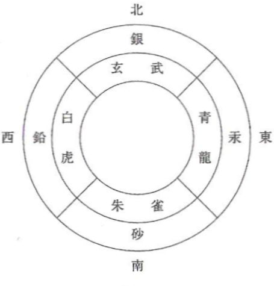
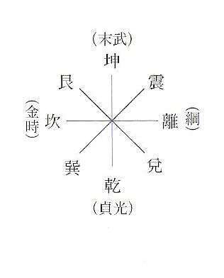

| 『西遊記』と五行思想 | |
| 西孝二郎 | |
| NishiKoujirou (2015) | |
『西遊記』と五行思想
西 孝二郎
第一章 桃太郎と玄奘三蔵
桃太郎が従者として引き連れることになった三匹の動物、「猿・雉・犬」からは、十二支の「申・酉・戌」がすぐに思い浮かぶが、この「申・酉・戌」はいずれも西方に位置している動物である。
そして、中国の四神という観念においては、東は青龍、南は朱雀、西は白虎、北は玄武（蛇と亀が絡まった形で表現されたもの）であるから、「申・酉・戌」という西方の三動物は、一つにまとめて「虎」として表現することが出来、逆に「虎」を「申・酉・戌」という三動物に分解して表現することも出来るということになる（次図）。
そうすると、桃太郎と猿・雉・犬は、桃太郎と虎という構図で理解することも出来るものとなるが、この構図から、次のようなことが思い浮かぶ。
敦煌莫高窟から出土した物のなかに「虎を伴う行脚僧」と呼ばれているモチーフの絵があり、その数は十点に上るという。また、十八羅漢（最初、インドのナンディミトラが説いたときは十六羅漢であったが、中国において二人加わり、十八羅漢となった）という観念において、その第十七羅漢は降龍、つまり龍を降参させた姿で描かれるが、第十八羅漢は伏虎、つまり虎を馴伏せしめた姿で描かれるのだそうだ。
すなわち、この「虎を伴う行脚僧」や十八羅漢の姿が、桃太郎と虎という構図から思い浮かぶのである。
しかも、桃太郎は、吉備団子を与えて三匹の動物を家来にしたのであるが、団子はその形状から言って数珠を想起させるので、このことは、桃太郎が、数珠（吉備団子）を使った仏教的手段によって虎（猿・雉・犬）を馴伏せしめる、という構図のものとして見ることが出来るものであり、そうであれば、桃太郎は、ますます、「虎を伴う行脚僧」や十八羅漢の姿と重なってくるのである。
桃太郎からは、このような意外な人物像が背後に浮かび上がってくるのであるが、さらに興味深いのは、この「虎を伴う行脚僧」にしろ、第十八羅漢にしろ、いずれにおいても、その人物は玄奘三蔵だ、という説があることだ。
玄奘三蔵......唐の時代の名僧で、西域を経てインドへ向かう取経の旅をし、『大唐西域記』を著わし、そして、なんといっても、『西遊記』の三蔵法師のモデルとなった人物である。
虎を従えた行脚僧、あるいは伏虎羅漢のモデルとして取り沙汰される玄奘三蔵は、インドへの取経の旅によって、経典という、まさに宝物を持ち帰ることとなった。しかし、それは想像を絶するような困難を乗り越えてのものであり、この困難の克服が、桃太郎における鬼退治として表現されたとしてもおかしくはあるまい。
『西遊記』の登場人物としての玄奘三蔵においても同様である。しかも、ここにおける三蔵の困難の原因は多く妖怪であるから、なおさらその困難は鬼という表現に置き換えやすい。こうして、桃太郎と玄奘三蔵は、限りなく身近な存在になっていくのである。
第二章 五行・十二支・四神・易などについて
本書では『西遊記』について、易、五行や十二支、四神などを使った解釈を試みるので、それらについて、ここで簡単に述べておこう。
まず易の八卦について。
八卦とその意味するところは次の通りである。
乾＝天・頭・馬・君・父など
兌＝沢・口・羊・少女など
離＝火・目・雉・太陽・亀・中女など
震＝雷・足・龍・動・長男など
巽＝風・股・鶏・木・長女など
坎＝水・耳・豕・月・中男など
艮＝山・手・狗・少男など
坤＝地・腹・牛・母など
なお、長男・長女といった言葉の意味するところは以下の通りである。
長男＝三十歳から四十歳ぐらいの男性
中男＝十五歳から三十歳ぐらいの男性
少男＝五歳から十五歳ぐらいの男性
長女＝三十歳から四十歳ぐらいの女性
中女＝十五歳から三十歳ぐらいの女性
少女＝五歳から十五歳ぐらいの女性
そして、これら八卦は八つの方位に一つずつ振り分けられているが、この配当には二通りのやり方がある。先天八卦図と後天八卦図（次図）がそれであるが、この内、後天八卦の方が広く用いられるものである。
そして、四神については先に述べたが、東西南北の四方には、四神の他に鉱物も配されている。
東＝青龍＝汞（水銀）
南＝朱雀＝砂
西＝白虎＝鉛
北＝玄武＝銀

玄武とは亀に蛇が絡み付いた姿で表わされているものである。また、それぞれの青・朱（赤）・白・玄（黒）という色は、五行におけるそれぞれの方位の色と一致している。
その五行について。
五行とは、木・火・金・水・土の五つのことである。そして、それぞれに対して方位や季節、そして色、さらには数字や五臓が配当されている（次図）。
木＝東＝春＝青＝三・八＝肝
火＝南＝夏＝赤＝二・七＝心
金＝西＝秋＝白＝四・九＝肺
水＝北＝冬＝黒＝一・六＝腎
土＝中央＝土用＝黄＝五・十＝脾
なお、ここで述べた数字の配当は河図といわれる系統のものである。これとは別に洛書と呼ばれる配当の仕方もあり、それは次図の通りである。
さらに、八卦や十二支と五行の関係についても述べておこう。
十二支と五行の関係は、広義的には次のようになっている。
木＝寅・卯・辰
火＝巳・午・未
金＝申・酉・戌
水＝亥・子・丑
土＝辰・未・戌・丑
この場合、十二支は木火金水の四つにまず分類される。そして、土は各五行（季節）の終わりに存在し、前の季節を殺し、次の季節を生む働きをしている。
だが、この十二支と五行の対応関係については、もう一つ別の考え方がある。それは、八つの方位（八卦）に五行がそれぞれ配当されているので、そこに十二支を当てはめていくというものである。まず、八方位（八卦）に配当されている五行は次の通りである。
東 （震）＝木
東南（巽）＝木
南 （離）＝火
南西（坤）＝土
西 （兌）＝金
西北（乾）＝金
北 （坎）＝水
北東（艮）＝土
そして、この八方位に十二支を振り分けると、先程とは違った五行と十二支の関係が導き出されるのである。
東 （震）＝木＝卯
東南（巽）＝木＝辰・巳
南 （離）＝火＝午
南西（坤）＝土＝未・申
西 （兌）＝金＝酉
西北（乾）＝金＝戌・亥
北 （坎）＝水＝子
北東（艮）＝土＝丑・寅
十二支のそれぞれの動物が五行のいずれに当てはまるのかということは、これから行なう解釈において理解しておかなければならない重要なことであるが、本書においては、この後者を採用して解釈を進めていく。
*
それでは、これから行なう謎解きのウォーミングアップとして、『三国志』『紅楼夢』『西遊記』『水滸伝』『金瓶梅』という中国のいわゆる五大小説のタイトルについて、五行などを使った解釈を試みてみたい。
『三国志』『紅楼夢』『西遊記』『水滸伝』のタイトルの頭の文字を見ると、それが、東・南・西・北、を表わしているということに気づかされる。すなわち、
・三は東（五行は木）の数である。
・紅は赤と見做せば、南（五行は火）の色である。
・西はそのまま西（五行は金）である。
・水は五行において北に配当されるものである。
このような解釈から、中国の四大小説（四大奇書・四大名作）という場合、右の四つをそれと見做すべきであり、『金瓶梅』は、その頭に金の文字が付いてはいるものの、しかし、内容は『水滸伝』の武松伝説を敷衍したものであるから、『水滸伝』の支流と見做すべきであって、これを四大小説の一つに数えるのは正しくないのではないか......というような考えが可能になってくる（中国では実際、『金瓶梅』は四大奇書から外されている）。
ただし、『西遊記』は申（五行は土）の悟空が主人公であるから、これを土と解釈し、『金瓶梅』を西方（五行は金）と見做して、五大小説と五行の対応という形で解釈することも可能ではある......。
中国の四大小説もしくは五大小説と呼ばれるもののタイトルについて、このような五行的な解釈が可能なのであるが、このような結果は偶然にしてはちょっと出来過ぎと感じられる。明らかに、これらの小説を、五行に合致する配置にしておこうという意図があったのだと思われる。異なる時代に長い年月をかけて作られたであろうこれらの小説を、極めて俯瞰的に眺めていた視点がそこにあったということではないだろうか。
そうであれば、これらの作品は最初から四大小説もしくは五大小説として存在するべく計画されて作られた作品ということにもなってくるだろう。
*
さて、これから解釈を行なうためには、さらに、五行相生・相剋という法則についても理解していなければならない。五行相生は、五行の一つが別の一つを生み出していく法則のことで、五行相剋は五行の一つが別の一つを殺すという法則のことであり、それは次図のようになっている。
五行図では、土は中央に位置するようになる。これは、東北と西南に分裂して存在している二つの土を統一して、それを両者の中間に置いた形である。しかし、性質としては、火と金の間の橋渡しとして、西南の土によって代表された形になっている。
第三章 一行五者と五行の関係・１
（※以降数多く行う『西遊記』からの引用は、第一回～第八十回は小野忍または中野美代子訳『西遊記』<岩波文庫>、第八十一回～第百回は、太田辰夫・鳥居久靖訳『西遊記』<平凡社>に拠った。）
『西遊記』で取経の旅をするのは、玄奘三蔵・孫悟空・龍馬・猪八戒・沙悟浄の合わせて五者であるから、彼らは五行に相当するのでないかと推測することが出来る。
実際、『西遊記』中に挿入された詩などにおいて、悟空は「金公」、八戒は「木母」、悟浄は「黄婆」と呼ばれるようになり、それらは、彼らそれぞれに対応する五行を示していると思われる。すなわち、この三者の五行は、悟空が金、八戒が木、そして、黄は土の色であるから、悟浄が土ということになる。
しかし、悟空は猿であり、十二支の申に当たるから、五行は土になるはずである。それが、金公という五行の金を示す名称で呼ばれているのは、悟空が三蔵の弟子になった直後、虎を退治し、その皮を剥いで腰巻きとして自分の身に着けたことと関係があるのではないだろうか。というのも、虎は四神西方の動物であり、それはまさに金のシンボルになるものだからだ。
ということは、取経の旅に参加する際、悟空は虎の皮の腰巻きを身に着けることによって、土としての猿から、金としての虎へと変身したと言うことが出来そうだ。そして、この変身の仕方を注意深く見てみると、悟空におけるこの土（申）から金（虎）へという移行は、五行相生説にある「土生金」（土は金を生ず）という法則に合致しているということに気づかされる。
結論から言って、一行五者それぞれの占める位置は、このように五行相生の法則によって変化移行するのであり、そのことは、彼らの姿の変貌等によってはっきりと示されているのである。
*
悟空とともにその変化移行が最も明らかなのは馬である。一行に参加している馬はもともとは龍だったのだ。龍が馬に変化したものなのである。そこで、この龍と馬は、四神東の龍（木）と十二支南の午（火）であると考えることが出来るので、龍から馬へという変身の内に、「木生火」という五行相生の法則に合致した移行を見出すことが出来る。
*
悟空が猿と虎、馬が龍と馬というふうにそれぞれ二様の姿を持ち、その二つの姿によって、五行相生の理に合致した移行を表現しているのが分かったわけだが、三蔵にもまた同様のことが見出せる。
三蔵は、人間としての姿の他に虎としての姿も持つ。ただし、これは妖怪の手によって姿を変えられてしまったものではあるが、ともかく、三蔵は『西遊記』第三十回において虎に変身しているのである。そして、その虎の姿から再び人間としての三蔵の姿に戻る。この復活の際の、虎から人間へという変化が五行相生の法則に合致したものになっているのである。
虎は、四神西方の動物なので、五行は金である。では人間は何に当てはまるのだろうか。ここでは人間という捉え方ではなく、彼が男性であるというところに注意を向けなくてはならない。つまり、男子である。中国では男子のことを子と表現することがあり、これは十二支の子と同じ文字であって、その子は北に位置していて、五行は水である。従って、三蔵が虎から人間の男子へと復活した際の変貌は、まさに「金生水」という五行相生の法則に合致したものとなっているのである。
そして、移行前が四神の動物、移行後が十二支であるというのは、龍馬の場合と全く同様であり、また、その位置する方位においては完全な対称を成していることになる（次図）。
しかも、この龍は、三蔵がもともと乗っていた馬を呑み込み、その後、自分が馬に変化したのであるが、これは、馬が龍へ一度逆行し、改めて馬に戻ったと言えることなので、ここに、三蔵が辿った逆行と復活という経緯と同様のものを見出せるわけである。
*
次に、猪八戒と沙悟浄について考えていこう。
猪八戒は一行に参加してから、「木母」などというように、主に木のついた名称で呼ばれる。沙悟浄は「黄婆」と呼ばれることが多くなるが、黄は土に配当された色だし、婆も老陰というふうに解釈すれば坤であるから、これも土である。要するに沙悟浄は土。そして、悟空に対して使用される「金公」という名称は、五行相生の法則による彼の移行後の位置を表わしていた（悟空は「土生金」）わけだから、この悟空の例に従って考えれば、木（木母）と土（黄婆）という両者のそれぞれの名称は、五行相生による変身移行後の位置を表わしたものと考えるのが妥当であろう。そこで、彼らと五行相生の関係は、猪八戒が「水生木」、沙悟浄が「火生土」と推定することが出来るのである。
この推定を確かなものにするためには、両者の正体が何であり、その正体と五行との関わりがどうであるかを調べることが必要になってくる。物語中では明言されていない沙悟浄の正体も明らかにしなければならないだろう。
なお、彼らの正体については、それぞれ移行前の五行の内に見出すべきである。なぜなら、悟空のもともとの姿である猿（申）は土（坤）に属しており、土は「土生金」の悟空にとって、移行前の位置であるから、八戒や悟浄の正体も悟空と同様に、それぞれの移行前の位置に存在していると考えられるのである。
では、まず猪八戒から考えてみると、彼の姓は猪であるが、しかし、その正体は豕（豚）である。第八回において、八戒は観音から「そなたはどこの化け野豚です？」と言われていることからもそうと知れる。
十二支には「亥」というのがあり、これは猪であるから八戒の姓と結び付く。また、猪は豕とは同属であるから、八戒と十二支の亥の関係は確実という感じがする。しかしながら、その正体が豚である以上、やはりそれにぴったりと当てはまるものでなければ、今一つ納得出来ないという気もするのである。
そこで、十二支や四神以外にも目を向けてみると、『易経』（周易）の説卦伝に「坎為豕」（「坎を豕 と為す」）とあるのを発見することが出来る。坎は北の卦で五行は水であるから、八戒の正体は水であるという先程の推定とも一致する。よって、猪八戒の正体は、説卦伝の坎の項に出てくるこの「豕」に基づいたものではないか、と考えてみることが出来るようになるのである。
次に、沙悟浄。
先程の推理では、悟浄は移行前において火であり、八戒の水とは正反対に位置するということになっている。火であることが推定される沙悟浄については、猪八戒と同様に、やはり易の説卦伝の中にその正体を求めてみるべきであろう。三蔵と龍馬の位置関係も対称的なものであったが、そこでも、両者における四神や十二支の使われ方は、全く共通であったからだ。
沙悟浄は水怪であるということが本文中に述べられている。そこで、それに合致するような生き物、つまり、水と関係の深い動物であるということを念頭に置いて探さなければならない。
説卦伝の離の項を見てみると、そこには水に関係の深いものとして、蟹やたにし、それに亀といったものが挙げてある。この中から決定しなければならないのだが、先程から述べている対称性というものをヒントにすることによって、悟浄の正体が見えてくるのである。
少し前に、猪八戒は十二支の「亥」とも関係があると述べたが、そうすると、猪八戒の正体である豕は、北である坎の項にずばり明記されていると同時に、そのすぐ隣の北北西に位置する十二支の動物と深い関わりを持っているということになる。そこで、その対極である南側にも同様の構造があることを想定してみよう。
北北西の「亥」と対極的な位置にあるのは南南東の「巳」である。「巳」は蛇である。この蛇が沙悟浄の正体に何らかの関わりを持っていると仮定してみるわけである。
ここで四神の動物を思い出してもらいたい。その一つに「玄武」というのがあるが、これは、亀に蛇が巻き付いて一体となった形のものである。ここから、蛇、つまり「巳」のところには、亀の姿がちらついていると言うことが出来るようになる。
亀は、南である離の項に明記されていると同時に、そのすぐ隣である南南東に位置する十二支の動物と密接な関わりを持っている。亀の持っているこの構造は、北側に位置する豕と全く同様であり、完全な対称を形成している（次図）。
よって、猪八戒が豕であるなら、沙悟浄は亀であろうと考えることが出来、そうすれば、沙悟浄は「火生土」であるという推定をも裏付けることが出来るのである。
また、沙悟浄がいた場所は流沙河という所であり、それは現実にあった砂漠地帯の名称だそうである。砂漠と水怪という正反対の要素が、沙悟浄に付与せられているということになるが、この矛盾する要素が、ここで行っている推理を一段と確かなものにする。なぜなら、火は物を乾かすものであるから、砂漠という乾燥地帯は火、つまり離に属するものと考えられるからだ（実際、説卦伝には「離を乾 くの卦と為す」とある）。沙悟浄のいた場所が離に相当する所であるということが、彼の正体が、やはり離であること（すなわち、亀であること）を暗示しているのである。
五行相生による移行という観点に立って推理した結果、猪八戒、沙悟浄の正体がどうやら明瞭になってくる、というこの事実から、逆に、五行相生による彼らの移行という推測が裏付けられ、確かなものになっていくと言うことが出来るのではないだろうか。
*
一行五者と五行の関係をまとめると次のようになる。
三 蔵＝金→水
龍 馬＝木→火
孫悟空＝土→金
猪八戒＝水→木
沙悟浄＝火→土
そして、それは次のような変化で表わされているということになる（次図）。
三蔵＝虎（四神）→子（十二支）
龍馬＝龍（四神）→午（十二支）
悟空＝申（十二支）→虎（四神）・金公
八戒＝豕（坎）→木母
悟浄＝亀（離）→黄婆
*
ところで、『西遊記』第三十回から三十一回、三蔵が妖怪によって一時的に虎に変えられてしまう場面について、少し付け加えて述べておこう。この場面から、三蔵が「金生水」という位置を占めることを導き出したのであるが、しかし、ここで目を向けるのは、この場面における他の四者の在り方なのである。
三蔵が虎に変えられているとき、悟空は故郷の花果山に帰り、猿の王様という地位に、つまり、猿そのものに戻ってしまっていた。悟空は西天取経の旅の一行に加わるに際して、虎を退治し、その皮を腰巻きにすることによって、猿から虎へ変身し、五行においては、土から金へ移行することになった、というのは前に述べた通りである。
それが、この第三十回の場面では、悟空は、三蔵の弟子たるを止め、旅の一行から離脱して花果山の猿に戻ってしまったわけで、これは虎から猿への退行、五行においては、金から土への逆行とも言い得るものである。
悟空が三蔵に追放されたのは、第二十七回においてなのだが、それに続く場面で、悟空のこの逆行に伴うかのようにして、三蔵もまた、男子から虎へ、すなわち、水から金へ逆行している。悟空の逆行に引っ張られるようにして、三蔵も後へ引き戻されざるを得なかったという有り様である。そして、他の三者においても、やはり、この場面において連鎖的に逆行している様子を見出すことが出来るのだ。
馬も一時的に龍の姿に戻った。捕えられている三蔵を救い出すために、もともとの姿である龍に変化して妖怪と戦ったのである。これは、火（十二支の午）から木（四神東方の龍）への逆行である。
八戒については次のように書かれている。
「三蔵が災難にあい、小龍が戦いに敗れたことはさておき、こちらは猪八戒。悟浄を見捨ててからは、まるで飼い豚が泥沼を口でつつくようにして、草むらに頭を突っ込み、そのまま眠り込んで、夜中にやっと目を醒ましました。醒めたが、どこにいるのやらわからず、目をこすり、気を落ち着け、耳をそばだてましたが、ああ、なんということか、深山では犬の吠え声もせず、広野では鶏の鳴き声もしません。星の位置が変わって、だいたい三更（夜の十二時）ころです」（第三十回）
八戒はそもそも豚（豕＝坎＝水）であったのが、一行に加わることによって、「木龍」や「木母」などと呼ばれるようになり、つまり、水から木に移行したわけである。それが、この場面では、八戒の姿は「まるで飼い豚」と述べられており、それによって、八戒がもともとの姿である単なる豚へ逆行していることが示唆されている。
そして、彼が目を醒ましたのが「星の位置が変わって、だいたい三更ころ」とあるのも、「三更」が夜の十二時、すなわち、北（水）であることを考えれば、これも、八戒が木から水へ逆行したことを暗示するための表現と見て取ることが出来よう。
悟浄の場合はやや難しい。悟浄はこの場面において、閉じ込められて縄で縛られた状態にいるのであるが、彼もまた他の四者と同じように逆行したとするならば、彼は、亀（火）から黄婆（土）に移行してきたのであるから、ここでは再び亀に戻っていなければならないはずである。
ここで、またもや玄武の姿がヒントになる。悟浄が縄に縛られている姿からは、玄武（蛇に巻きつかれた亀）の姿を想起することが出来る。すなわち、悟浄が縄で縛られた様子こそ、まさに彼が亀に逆行したことを表現したものなのだと解釈することが出来るようになるのだ。
といっても、悟浄の正体そのものが玄武としての亀であるというのではない。彼は離に属する亀である。玄武のイメージは、悟浄がその場面において亀に戻っていることを暗に示すために利用されているに過ぎない。
*
以上のように、この場面では五者全員が移行前の位置に逆行した様子が見出せるわけであるが、その後、悟空が再び虎の皮の腰巻きを身に着け、花果山から一行のもとへ戻ってきて活躍することによって、他の四者は災難から解放され、それに伴って起こっていた退行状態から復帰することが出来たのである。
このような五者の連鎖的退行と復活の様を見ることによって、先に述べた一行五者と五行（相生）との関係が、ますます確実なものになってくると言えるだろう。
また、全員のこのような退行と復活は、おそらく三蔵のために必要だったのだと思われる。一行五者のうち彼一人、移行前における姿が表現されていなかったからである。しかしながら、三蔵の前身が虎であることは、物語中かなり早い段階で示唆されてはいる。
第十五回に次のような詩句がある。
「金蝉 をして重ねて殻を脱せしむるを致し 故に玄奘をして再び修業せしむ」
金蝉というのは三蔵の前世の名であるから、要するに三蔵のことである。その金蝉が殻を脱する（金蝉脱殻）という言葉は第二十回にも出てくる。虎の化け物が悟空に追われて逃げるとき、「金蝉脱殻」という計を使ったのである。その化け物は胸に爪を突っ込んで、自らの虎の皮を剥ぎ取り、その皮を岩に着せ掛けて、本体は一陣の狂風と化して逃げていくということになっている。このように、虎の姿から抜け出ていく技が「金蝉脱殻」と名付けられているのである。これは取りもなおさず、金蝉、つまり三蔵の脱殻というのは虎の姿から抜け出ることであるということを表わしている。そして、「脱殻」を、五行相生による移行（成長）という考えと重ね合わせれば、この第二十回の場面は、玄奘三蔵の移行前の位置が虎（つまり、西であり金である）であることを示唆するために設けられたものであると考えることが出来るのである。
*
これまで述べてきたような五行相生の法則による移行は、お供の者たち個々人としては、この取経の旅の一行に加わった時点において行われると言ってよいようである。彼らはその時点で、それまでの悪い妖怪としての存り方から脱却して変身したということが言えるし、また、次のような場面がそれを表わしている。
三蔵は、第十三回において取経の旅に出発するのであるが、その直後の第十四回では、早くも五行山に閉じ込められていた悟空を助け出している。そして、自らの白木綿の直裰 を悟空に与えているのである。白は五行の金である。それが三蔵から悟空に渡ったのは、三蔵が金から水へ移行し、悟空が土から金に移行することを、つまり、三蔵から悟空へ金の位置が譲渡されたことを端的に物語っているのである。
また、八戒がこの一行に加わるのは第十九回である。加わってすぐに、高家荘というところの老人から青錦の袈裟を貰って着ている。青はもちろん木である。「水生木」である八戒の移行後の位置と一致する。
そして、悟浄は第二十二回に一行に参加するのだが、その際には黄色の錦の直裰を一着に及んだと述べてある。黄色は五行の土である。悟浄は「火生土」であるから、彼もまた移行後の五行に相当する色の着物を着たということになる。
悟空の白い着物も、八戒の青い袈裟も、また、悟浄の黄色い着物も、始めから着ていたのではなく、一行に参加するときに、あるいは参加した直後に初めて着用されている。それはつまり、一行に参加することによって、初めてその着物の色に相当する五行になったということであり、五行相生の法則による移行という図式を暗示するものである。
また、馬はどうであろうか。馬において着物に相当するものは鞍ということになるであろう。しかし、残念ながら馬の鞍についてはこのようなことは述べられていない。龍の化身としての馬が参加した直後、悟空や八戒や悟浄が着物を貰って身に着けたと同じように、鞍と手綱を貰って身に着けてはいるが、色については言及されていない。しかし、すでに他の四者については、その着物の色による五行の表現は行われたわけだから、残る一者の馬の位置は必然的に決まってくるということで言う必要もなかったのであろう。悟空や八戒や悟浄の例から言って、馬の鞍の色は赤でなければならないはずである。馬は「木生火」と推定しているのだから、その移行後の火に属する色である。
（※史実の玄奘は、旅の途中、馬を交換したが、新たに手に入れたのは赤い馬であったという。これは、『西遊記』の龍馬が、旅への参加によって火＝赤にならなければならないということを実現しているようで面白い。）
*
ところで、第十九回、八戒収服の場面には次のような詩がある。
金の性は剛強 くして能 く木に剋 ち
心猿は木龍を降し得て帰る。
金は従い木は順 い 皆一と為り
木は恋い金は仁 しみ 総 べて発揮す
さらに、第二十二回、八戒と悟浄が戦っている場面の詩に次のような句がある。
「木母は刀圭 にうち克 つに因 り、両下（双方）をして相戦触 わ令 むるを致す」
これらの詩からは新たな発見をすることが出来る。第十九回の詩の第一句に「金の性は剛強にして能く木に克ち」と言っているが、これは五行相剋説の「金剋木」（金は木に剋つ）に一致しており、第二十二回の「木母は刀圭にうち克つ」は、やはり五行相剋説の「木剋土」（木は土に剋つ）に一致しているということである（刀圭の圭は土を二つ重ねた形だから五行の土を表わすと解釈されている）。これまでは専ら「五行相生説」との関わりを述べてきたわけだが、どうやら「五行相剋説」の方も、この物語の展開に深く関わってきているようである。「五行相剋」とは、五行の一つが別の一つを剋殺する関係のことであり、当然五つのパターンがある。以下の五つである。
水剋火（水は火に剋つ）
火剋金（火は金に剋つ）
金剋木（金は木に剋つ）
木剋土（木は土に剋つ）
土剋水（土は水に剋つ）
第二十二回の詩は、八戒と悟浄が戦っている様を描いたものであり、木母と刀圭はそれぞれ八戒と悟浄のことである。「水生木」の八戒と「火生土」の悟浄は、移行後の位置において「木剋土」という相剋の関係になっていることをこれらの文は示している。
だが、この両者の戦いは、八戒の優勢ではあったものの、悟浄は逃げて水の中に潜ってしまったので、完全には決着がつかなかった。なぜであろう。実はここでもっと露わにこの五行相剋を実現してみせる人物が現われるからである。
悟浄との戦いが決着しないので、悟空は観音菩薩のもとへと飛んでいき、そのことを訴えた。観音菩薩は、そこで木叉行者（恵岸）という人物を遣わし、悟浄を帰順させるように取り計らうのであった。木叉という名前には五行の木が含まれている。五行相生による移行を果たした後、土になる悟浄とはやはり「木剋土」の関係になる。木叉の声を聞いて悟浄は、逃れていた水の中から出てくる。そして、木叉から三蔵たちの正体を聞かされることによって、土を表わす黄色の着物を一着に及んだ上で、三蔵のもとに赴き帰依することになるのである。
第四章 一行五者と五行の関係・２
白 馬
馬は龍（四神東）が化身したものだから「木生火」の位置を占める。しかしながら、一つ引っ掛かることがある。それはこの馬の色が白であるということだ。白は西方金の色、「木生火」という位置に相応しくない。これは一体どういうわけであろうか。また、孫悟空は、移行後の位置としては金であるのに、しばしば心主など、五行の火に結び付く名称でも呼ばれる（心は五行の火に属するとされているものである）。
馬は移行後の位置としては火であるのに、その色は金を表わす白、悟空は移行後の位置が金であるのに、火に相当する名称で呼ばれる......まるで悟空と馬がその位置を入れ替わったかのようだ。どうしてこういうことが起こるのか、その理由について考えてみたい。
*
水→火→金→木→土
これが五行相剋の理に従って、それぞれの五行を、水を筆頭に置いて順番に並べたものである。すなわち、「水剋火」「火剋金」「金剋木」「木剋土」「土剋水」という順番である。ここに、五者それぞれを、前章で述べた移行後の位置で当てはめてみよう。
三蔵→馬→悟空→八戒→悟浄
こうしてみると、これは、まさに五者それぞれが取経の旅に参加した順番と一致しているということが分かる（ただし、この場合の馬は龍馬ではなく、三蔵が最初に連れて出た馬である）。
すなわち、取経の旅に参加する順番は、五行相剋によって決定せられていたのだ。悟空が八戒を収服したときや、八戒が悟浄と戦ったときは、それぞれ「金剋木」「木剋土」として詩の中で表現されていたから気付くことは出来たが、それだけではなく、一行全体がこの五行相剋の理に貫かれているのである。
そして、問題の悟空と馬の位置の逆転についてもここから説明が出来そうである。というのも、五者がこの旅に参加した順番は確かにこの通りなのであるが、しかし、馬は龍に呑まれて一度いなくなったではないか。いなくなって、後で龍が化身をして新たに参加した。この新たに参加した場面は第十五回、悟空が三蔵のお供になった後である。そこで順番が入れ替わってしまったのではないだろうか。それで悟空が二番手の位置である火に昇格し、馬は三番目の金になってしまったのではないのか。五行相生と五者の関係からいくと、悟空が「土生金」であることは間違いない。また、馬が「木生火」であることも確かだ。しかし、右のような事情で悟空と馬の位置が入れ替わり、金である悟空が火として語られるということが起こり、火である馬の色が金を表わす白であるということが許されるようになったのではないだろうか。
だが、最初に連れて出た馬は単なる馬であり、菩薩によって取経の旅への参加を約束された者ではないから、やはり考えに入れない方がよいかもしれない。そうすると、今述べた内容は次のように言い直すことが出来る。
一行五者に対しては、その一行に参加した順番によって、五行相剋の理に従い、それぞれに五行の一つが与えられることになる。そこで二番目に参加した悟空には火が与えられ、三番目の龍馬は金という位置を得た。そのようにして彼らは、五行相生による移行で得た位置とともに、五行相剋によって得た位置をも併せ持つことになったのである......。
三蔵（水）→悟空（火）→龍馬（金）→八戒（木）→悟浄（土）
三 蔵
だが、このように五行相生による二つの五行の他に、さらにもう一つ別の五行を持っているというのは、龍馬や悟空だけではない。実は三蔵もそうなのである。三蔵は「金生水」であった。しかし、三蔵の「三」、これは東に配当された数であり、つまり木である。
前述のように、龍馬は「木生火」という位置を占めているが、それは三蔵の「金生水」と対称を成している。その姿からいっても、龍馬の「木生火」は、四神東の龍（木）と十二支南の午（火）であるのに対して、三蔵は四神西の虎（金）と十二支北の子（水）ということでその対称は完全である。そして、龍馬と三蔵のこの対称性をさらに徹底的にするのが、この三蔵の「三」と白馬の「白」なのである。
「三」は木であるから、金である「白」の対極に位置するものである。「木生火」であるはずの馬が、金に相当する白い色として存在しているのは、馬と対称を形成している「金生水」の三蔵の名前の中に、木に相当する数字の「三」が含まれているからなのだとも言えるだろう。馬と三蔵は対極に位置するものとして、うまくバランスを取り合っているのである。
心 猿
「土生金」である悟空が、「心猿」「心君」「心主」など五行の火としての名称で盛んに呼ばれる理由については、すでに五行相剋との関係などからの推理を行なってみたわけだが、さらに、別の解釈をすることも出来そうだ。
悟空は、龍から奪った如意金箍棒を持ち、虎の皮の腰巻きを身に着けている。つまり、悟空は自らの身において、四神東の龍と西の虎という東西の要素を合わせ持っていることになる。これは、煉丹術においてよく出てくる龍虎の交媾という図式に合致している。悟空は龍虎の力を自分のものとし、実に強力な存在になることで、煉丹術の成果という一面も持ち合わせているのかもしれない。
そうすると、煉丹術の成果は文字通り「丹」（丹薬）であるのだから、悟空＝「丹」ということになる。この場合「丹」は不老不死の薬のことであるが、「丹」はまた赤い色を意味する言葉でもある。赤は五行で言えば火である。こうして、「丹」と五行の火が結び付くのである。よって、悟空が「心君」など五行の火で語られる理由は、彼が煉丹術の成果としての「丹」であるからということにもなるのであろう。
なお、悟空が、東西交媾による煉丹術の成果として描かれることになった理由として、猿を意味する猿猴という言葉が、鉛汞と同じ音であるということが挙げられる。鉛は西に、汞（水銀）は東に、それぞれ配当された鉱物である。猿猴は鉛汞に通じることから、すでに東西の要素を合わせ持っており、煉丹術に合致した存在になっているのである。
黒 衣
「水生木」の八戒は移行後が木で、一行に参加する際、青い着物を着用したが、第五十回においてはいつのまにか、その着物の色が黒になっていて、その後も黒いままである。黒は水であるから、八戒は五行相生によってすでに木に移行した後でも、同時に水の位置にも立っていることになる。これは、金の悟空が「心」として火であったり、火の馬が「白馬」として金であったり、さらには水の三蔵が「三」として木であるのと同様であるように思える。
三蔵＝水・木（三）
龍馬＝火・金（白）
八戒＝木・水（黒）
悟空＝金・火（心）
二 土
そして、残る悟浄であるが、彼は刀圭などと呼ばれ、その「圭」の字が土を二つ重ねたものとなっている。つまり、二土である。
このように、悟浄が土を二つ重ねた名称を持っているのは、悟空や八戒、三蔵や龍馬が、移行後でも二つずつの五行を有しているということに対して、釣り合いを取るという意味があるのかもしれない。
三蔵＝「金→水」＋木（三）
龍馬＝「木→火」＋金（白）
悟空＝「土→金」＋火（心）
八戒＝「水→木」＋水（黒）
悟浄＝「火→土」＋土（圭）
第五章 三 合
これまで『西遊記』の登場人物と五行相生・相剋説との関わりについて述べてきたわけだが、彼らの姿や性質の背後にあるものはこれだけではない。そこで次に、三合の法則というものを取り上げて、それと『西遊記』の登場人物との関係について述べてみたいと思う。
まず、三合の法則について説明しておこう。
三合の法則とは、「生・旺・墓」の法則であって、五行の一つ一つの誕生の地点（生）、最も壮んになった地点（旺）、そして終息の地点（墓）というこの三つの位置を、十二支の上に定めたものである。『淮南子』には次のように書かれている。
・水は申に生じ、子に旺んに、辰に死す。三辰は皆水なり。
・火は寅に生じ、午に旺んに、戌に死す。三辰は皆火なり。
・木は亥に生じ、卯に旺んに、未に死す。三辰は皆木なり。
・金は巳に生じ、酉に旺んに、丑に死す。三辰は皆金なり。
・土は午に生じ、戌に旺んに、寅に死す。三辰は皆土なり。
このうち、子の三合（水の三合）と午の三合（火の三合）を図示すると次のようになる。
ここでは一行五者のうち、三蔵、龍馬、悟空の三者だけが問題となる。そして、五つの三合の法則のうち、ここで用いるのは、子を頂点（旺）とした子の三合（水の三合）と、午を頂点（旺）とした午の三合（火の三合）の二つである。
子の三合（水の三合）とは、申（生）・子（旺）・辰（墓）の三つであるが、この三つは、猿（申）・男子（子）・龍（辰）ということになるから、一行五者の内から八戒と悟浄を除いた残りの三者と一致することが分かる。
子の三合（水の三合）
申＝猿（悟空）
子＝男子（三蔵）
辰＝龍（龍馬）
そして、午の三合とは、寅（生）・午（旺）・戌（墓）の三つであるが、そのうち午（馬）は、龍の変身後の姿であり、寅（虎）は、悟空と三蔵に関わりがある。悟空は虎の皮の腰巻きを身に着け、それによって五行の金の位置を獲得したのだったし、三蔵は妖怪によって虎の姿に変えられたことがある。よって、午の三合も、三蔵、悟空、龍馬という三者と大いに関係がありそうであるが、ただ一つ、戌がどのように関わってきているのかがはっきりしない。
しかし、次のように考えてみることが可能ではないだろうか。
戌という字には、それによく似た文字が幾つかあって、それを似字と言う。たとえば、戊や戍などである。この内、戊とは十干の一つで、この文字を使った熟語として「戊夜」というものがある。これは、日没から日の出までを五等分した第五番目の時刻のことを言い、それはちょうど午前四時頃の寅の刻に当たるのである。つまり、戌はその似字「戊」に置き換えれば、そこから虎を導き出せるのである。
こうして、寅と戌からはいずれも虎を導き出すことが出来る。そして、それは、いずれも虎に関わりを持つ三蔵と悟空の両者に、それぞれ当てはまると考えることが出来よう。
午の三合（火の三合）
寅＝虎（三蔵または悟空）
午＝馬（龍馬）
戌→戊→戊夜＝寅の刻→虎（三蔵または悟空）
この午の三合は、三蔵・龍馬・悟空それぞれの第二の姿とでも言うべきものと一致している。子の三合が、この三者のもともとの姿を表わしているのは一目瞭然だから、この三者のとる二重の姿は、子と午という二つの三合の組み合わせによって出来上がっていることが分かるのである。
ところで、ともに虎に繋がる寅・戌という二つのうち、どちらが三蔵でどちらが悟空なのかを判別することは出来るだろうか。それを考えてみたい。
二つの虎のうちの一つは、戌をその似字「戊」に置き換えて導き出したものであった。そこで、この戌のもう一つの似字「戍」にも目を向けてみよう。すると、この「戍」は護る、守備する、警備する、というような意味であり、悟空の担っている役割と一致することが分かる。よって、戌という文字からは、それを二つの似字に置き換えて考えれば、「虎」とともに「護衛」という要素も取り出すことが出来るということになるから、この戌が悟空であり、寅が三蔵であると見做すことが出来るかもしれない。
しかし、三蔵と龍馬の対称性ということを考え合わせれば、逆に戌が三蔵、寅が悟空ということもあり得る（次図）。
※ここでは、八戒と悟浄が抜けている。しかし、『西遊記』の原型となった『大唐三蔵取経詩話』では、まだ八戒や悟浄に相当する人物は、同行者としては存在しておらず、そこにあるのは、人間・猿・馬という三者による構図であるので、三蔵・悟空・馬だけを取り上げて試みたここでの解釈にも意味があると言えるだろう。
第六章 酒呑童子伝説と『西遊記』
五行と五芒星
五行相互間には相生と相剋という二つの関係があり、相生は一つの五行が他の一つを生み出し、相剋は一つの五行が他の一つを殺すという関係であるが、この五行相剋（「水剋火」「火剋金」「金剋木」「木剋土」「土剋水」）を次図のような形で示すことによって五芒星は容易に得ることが出来る。
従って、五芒星は五行の相剋を表わす印とも言えるが、しかし、この印を得るためには、五行を相生の理（「木生火」「火生土」「土生金」「金生水」「水生木」）に従った順番に並べることが必要なわけであるから、相生・相剋のいずれもが関わる、すなわち、五行思想そのものを示す印であると言った方がよいだろう。
従って、五行に対応している『西遊記』の一行五者は、五芒星を形作る存在であるとも言える。そして、その五芒星はまた、日本においては晴明桔梗印としても知られるものである。
その五芒星をシンボルとする安倍晴明が重要な役割を果たすものに酒呑童子伝説がある......
「一条帝の時代、都の若君・姫君の多く失踪することが続いた。安倍晴明が占ってみると、それは大江山の酒呑童子の仕業であるということが判明した。そこで、源頼光 と藤原保昌 が征討の将軍として任命され、頼光は自らの四天王を、また保昌は大宰少監を引き連れて、揃って大江山に乗り込み、酒呑童子を退治したのであった。」
ここで、酒呑童子を退治する主役は源頼光の一行であるが、しかし、『御伽草子』以外の諸本において、男女の失踪を酒呑童子の仕業であると見抜いたのは安倍晴明となっているから、頼光一行の背後には安倍晴明が控えている、というふうに捉えることも出来る。
実際、『大江山絵詞 』には晴明が都を守っているので酒呑童子は危害を加えることが出来ない、という意味の文があり、また、「晴明の役割は占いで男女の失踪の原因を突き止めるというに留まっているにも関わらず、酒呑童子退治後の結末部分では、晴明のことを竜樹菩薩の化身とか希代の相人などとオーバーにもちあげるものだから、読者はなんとなく落ち着かない」（高橋昌明『酒呑童子の誕生』中公新書）ということもあって、こういう点から見ても、この説話の根本的な構図は、晴明対酒呑童子であるということが分かるのである。
そうすると、頼光とその四天王という五者は、晴明の五芒星に相当するのではないかという考えが浮かぶ。四天王といえば東西南北の四方に相当するものであり、五行もまた、そのうちの木火金水は東西南北の四方に位置している。ということは、頼光が土ということになり、それによって、五行と対応し、五芒星を形作ることになるのではないだろうか。
『五行大義』には「土は中に居り、以て四季を主 り、四時を成す」とあるように、中央の土には四方の主人という意味合いもあるのだから、やはり、頼光＝土なのであろう。
要するに、源頼光は土、彼の四天王は木火金水であり、この五者によって五行、すなわち五芒星、すなわち晴明桔梗が形成されているわけである。
さて、五芒星の中心的存在と言える頼光......なぜこの頼光が酒呑童子という鬼を退治する者として選ばれたのか、という点について高橋昌明氏は次のように述べている。
「鬼退治の主役がなぜ頼光でなければならないか、という自問への自答として、頼光が雷公 と音通である点を付け加えておきたい。......「鬼」を退治する存在は、一層の鬼的威力を持たねばならず、自身災いをなす荒ぶる霊力であってこそ、災異・モノノケに対抗しうる雷神が荒ぶる怨霊神になる決定的な契機は、延長八年（九三○）の清涼殿への落雷と雷死者の発生が、菅原道真の怨霊の働きと考えられたことにあるが、天空切り裂く閃光と肝をつぶす雷鳴こそ、怨霊の威力を表現してあますところがない。中世人の心意や伝承の世界においては、鬼神を征伐するには、雷公への連想をさそう名を持つ武将でなければならなかったのだろう」（前掲『酒呑童子の誕生』）
中国古代の雷公像は鳥の羽や嘴・爪を持っており、古くからその正体は鶏であると考えられてきたものであるが、その点からも、この頼光＝雷公（鶏）という解釈は裏書きされそうだ。
というのも、鬼はそもそも東北丑寅、すなわち鬼門と呼ばれる方位（時刻としては午前一時から五時までの深夜にあたる）の具象化であるが、丑寅（＝鬼＝深夜）は、まさに鶏（＝雷公）の鳴き声によって追い払われる存在だからである。
また、中国の古い文献では、鬼を虎に食わせるということになっているのだが、虎は四神における西の動物であり、鶏（酉）は十二支における西の動物なので、この西という共通点を介して、虎を鶏（雷公）に置き換えて鬼退治をさせる、ということも出来るわけである。
さらに、鬼退治の行事である節分において、私たちは豆をまくけれども、この豆という字は、上の部分と下の部分を重ね合わせると、まさしく酉という字になる。従って、豆をまいて鬼を追い払うという行事のうちには、鶏によって鬼を追い払うという構図が潜んでいると考えられるのである。
これらの点から、やはり鬼退治の頼光は、雷公という鶏を原型としているのだ、と考えることが妥当なものとなってくるのである。
雷公＝孫悟空
ところで、雷公といえば、他にもまさに雷公と呼ばれる有名な人物（？）がいる。『西遊記』の孫悟空である。彼は『西遊記』の中で盛んに雷公と呼ばれるのだが、それは古代中国の雷公像が体は鶏だが、顔が猿のように見えるということに由来しているようだ。また、猿を意味する十二支の申という字は、そもそもは稲妻の象形文字であったということも大いに関係していると思われる。
ともあれ、悟空は雷公なのであるから、源頼光と共通の存在であるということになるが、さらに、悟空もまた『西遊記』において、頼光と同様に四人の者を従えている。すなわち、玄奘三蔵・猪八戒・沙悟浄・龍馬である。『西遊記』は史実の玄奘による取経の旅を骨子としたものであるから、主役は玄奘だと言えなくもないが、しかし、やはり最も活躍するのは悟空であり、悟空を主役と見做すほうが妥当であろう。そして、その悟空は雷公である。
そうすると、『西遊記』は雷公とそれに従う四者という構図を示しているものであり、それは酒呑童子伝説における頼光とその四天王という構図に合致するものである。しかも、『西遊記』における悟空以外の四者は、前述のように、まさに東西南北（木金火水）に位置する四天王なのであるから、両者の一致は完璧なのだ。
悟空以外の四者が東西南北に位置する存在であるということについておさらいすると次のようになる。
〔馬〕......馬はそもそも龍であった。悪事のために死刑になるところであった龍が、観音菩薩の勧めで馬として取経の旅に参加することになったものなのであるが、その龍は四 神という観念において東に位置する動物である。
〔三蔵〕......三蔵はもちろん人間ではあるが、実はそもそもは虎なのだ。『西遊記』の第三十回において、彼は妖怪によって虎に変身させられる。その後、妖怪の術が解けて再び人間の姿に戻るのであるが、この場面は要するに、三蔵の本相が虎であることを示す場面なのであり、虎は四神において西に位置する動物である。
〔八戒〕......彼は豚であるが、これは易の卦を説明した『説卦伝』に「坎を豕 と為す」とあるのに基づいている。易の八卦の一つである坎は水を意味し、北に位置する卦である。すなわち、八戒＝北（水）である。
〔悟浄〕......彼は日本では河童だとされてきたが、これは日本人が勝手にそう解釈したものが日本のみで定着してしまったに過ぎないもので、実際には悟浄が河童であるとは一言も書かれておらず、彼の正体は実は亀であるようだ。そして、悟浄が亀であるのは、やはり『説卦伝』に「離を亀と為す」とあるのに基づいている。離とは火を意味し、南の卦とされるものである。すなわち、悟浄＝南（火）である。
三蔵＝虎＝西（金）
馬 ＝龍＝東（西）
八戒＝豕＝北（水）
悟浄＝亀＝南（火）
これが悟空以外の四者が位置する方位である。すなわち、東西南北であり、まさに四天王である。そして、主役の悟空は猿＝申であるから、それは、西南の坤＝土である。
保昌＝宝勝
猿（申）の悟空は土であり、彼に従う三蔵・八戒・悟浄・龍馬という四者は東西南北に位置する四天王的存在である。そして、悟空は盛んに雷公と呼ばれるのであるから、『西遊記』のこの五者は、まさに、頼光（雷公）とその四天王という酒呑童子伝説の五者と見事に一致する構図を持ったものということになる。
ところで、酒呑童子退治には他に藤原保昌 という人物も同行している。彼もまた大宰少監を連れて出たとあるけれど、この大宰少監は鬼退治で活躍するわけでもないので無視してかまわないと思うが、そうすると、頼光とその四天王の他に、もう一人この藤原保昌という人物が鬼退治に関わっているということになる。
この保昌については、高橋昌明氏が追儺会 という儀式における鬼払いの司令役である方相氏 が、保昌の音に近いということを指摘しており、確かにその観点から藤原保昌を理解することも可能であろう。
だが、せっかく『西遊記』の五者と酒呑童子伝説の五者がぴたりと一致する構図を示したことでもあるし、ここではやはり『西遊記』に目を向けて、そこに保昌の役割を説く鍵がないかを探してみることにしよう。この保昌に相当する人物も『西遊記』の中には存在しているのだろうか。それを以下考えていきたい。
敦煌から出土した絵画および壁画の中には「虎を伴う行脚僧 」をモチーフにしたものがいくつもあるのだが、この僧は誰なのかということについて、最近では、これは玄奘であるという説が有力になっている。その根拠は中野美代子氏の『西遊記～トリックワールド探訪～』（岩波新書）などに詳しく述べるところであり、そちらを参照していただきたいが、興味深いのは、この「虎を伴う行脚僧図」には、この行脚僧を守護する者として宝勝 如来が描かれているということである。宝勝如来は金剛界曼陀羅五仏の一尊であり、南方の守護神とされるもので、これらの図においては雲上にその姿が小さく描かれている。
玄奘（虎を伴う行脚僧）のそばには宝勝如来が守護神としてついている。そうであれば、玄奘を含む『西遊記』の五者のうちには必然的に宝勝如来もつき従っているということが言えるのではないだろうか。玄奘の参加とともに宝勝如来もまたこの『西遊記』の一行に加わって、秘かに彼ら一行を守護しているということが言えるのではないか。
宝勝 ......言うまでもなく保昌 と同音である。
つまり、『西遊記』においては、雷公（悟空）と他の四者という計五者の他に、玄奘を護る者として宝勝（ホウショウ）という存在も加わっていると考えることが出来るのであり、これは酒呑童子伝説において、頼光とその四天王という五者の他に、藤原保昌（ホウショウ）という人物が加わっているということと完璧に一致するものだ。
晴明＝世民
前述のように、都に起こる男女の失踪を酒呑童子の仕業であると見抜いたのは安倍晴明であるから、酒呑童子退治の頼光一行の背後には安倍晴明が控えている、と言うことが出来るわけだが、では、『西遊記』の一行の背後に控えているのは誰だろう。
『西遊記』と酒呑童子伝説には、「雷公と四天王、およびホウショウ」という全く同じ構図があるのだから、酒呑童子退治の一行の背後に安倍晴明が控えているなら、『西遊記』の玄奘一行の背後にも晴明に相当する人物が控えているはずではないだろうか。
『西遊記』の取経の旅は、唐の太宗の命によって行なわれるものとして描かれているから、玄奘一行の背後にはこの太宗がいると言えるが、その太宗の名、それは李世民 である。 世民＝セイミン......セイメイとはよく似ている音だ。それに、明という字はそもそもミンと発音するものであるから、晴明もセイミンと読むことが出来る名ではないか。
繋がった！
酒呑童子退治の一行の背後にいる晴明、『西遊記』の旅の一行の背後にいる世民......両者はともに「セイミン」なのだ。
これによって、酒呑童子伝説と『西遊記』の持っている構図は、ますます完全な合致を示すことになる。「ライコウと四天王・ホウショウ・セイミン」という要素が、両者に共通なのである。
聖徳太子らによる排仏派討伐
さらに、これと全く同じ構図を持ったものを挙げることが出来る。それは、『日本書紀』に記された、聖徳太子らによる排仏派討伐である。聖徳太子は物部守屋ら排仏派を討つとき、束髪の上に四天王像を載せて戦ったとある。そして、『日本書紀』に記された聖徳太子の名前の一つに法主王というのがあるのだが、この法主王は音読するとホウシュオウであり、ホウショウに限りなく近い音だ。すなわち、酒呑童子伝説や『西遊記』に存在する「四天王・ホウショウ」という要素がここにも見られるのである。
では、排仏派討伐の場面にも、雷公に合致する人物がいるだろうか。
酒呑童子伝説の頼光、『西遊記』の雷公（悟空）はいずれも五行の土と考えられたのであるから、この土に相当する人物が、排仏派討伐におけるライコウもこの土に相当する人物を探し当てればいいのではないだろうか。
排仏派討伐が行われたのは、排仏派が仏像を焼き捨ててしまったことがそもそもの発端である。その仏像の一つは弥勒であるが、弥勒はミロクという言葉から三つの六という連想を生み出すものである。
そして、易では陽を九、陰を六で表わすのだから、この弥勒＝三つの六は、三つの陰ということになり、それは易の坤となる。なぜなら、易の坤は陰を三つ重ねた形の卦だからである。
要するに、弥勒＝三つの六＝三つの陰＝坤なのであり、坤は西南の土である。従って、この排仏派討伐において、ライコウ（土）の位置を占めるのは、弥勒菩薩であると考えることが出来る（坤の置かれる西南は十二支では未申であるから、そこから悟空（雷公）にも結び付く）。
だが、『五行大義』では、八卦に対応する八神という観念の中で、雷公を東の震の神としている。雷公が東（震）の神であるなら、その五行は木である。雷公を木と考えると、別の人物が排仏派討伐におけるライコウ候補として浮上してくる。
それは迹見 首 赤梼 である。赤梼は、排仏派の首領・物部守屋を実際に殺した人物であるが、赤梼というのは樹木を意味する名前であり、まさに木であるから、赤梼＝木＝雷公という解釈が可能になってくるのである。
しかも、酒呑童子説話では鬼の首を斬ったのが頼光＝ライコウだから、排仏派討伐でも、排仏派の首領を実際に殺した人物がライコウであろうと考えれば、やはり、赤梼＝ライコウとなるのだ。
赤梼は聖徳太子の舎人 なので、聖徳太子（法主王）が束髪に載せた四天王と一体となって、五芒星を形成する人物ということになるだろう。そして、太子自身は保昌に相当する。
要するに、排仏派討伐においては、ライコウ候補として弥勒と赤梼という二者がいるわけで、「弥勒（赤梼）と四天王、および法主王」（排仏派討伐）＝「頼光と四天王、および保昌」（酒呑童子伝説）＝「悟空（雷公）と他の四者、および宝勝」（西遊記）ということになるわけだ。
<※なお、雷公を東の神にしてしまうと、四天王（東西南北）との位置の重複が起こって具合が悪いことになるが、この不都合は次のように、易の先天と後天を使って解決することが出来る。
まず、先天では、南に乾、北に坤、東に離、西に坎、が位置しており、ここに四天王はそれぞれ当てはまる（次図）。

次にそれらの卦を後天に持っていくと、後天では、乾は西北、坤は西南、離は南、坎は北となるので、四天王もこの、西北・西南・南・北という位置に移動する、というわけで、雷公は空いた東にすんなり収まることが出来るのである（次図）。
そして、この五者を五行相剋によって結ぶと、東を頂点とした五芒星の形になり、先天では東西南北の四方に位置し、十字を形成していた四天王は、後天に移動することによって、東を頭とした四肢という位置に移動することになる。>
それでは、排仏派討伐の場面において、晴明や世民に相当する位置に立っているのは誰だろう。頼光一行の背後には晴明が、『西遊記』の一行の背後には世民が、それぞれ控えていて、両者はともに、セイミンと読める名なのであった。
それでは排仏派討伐の場面においても、その晴明や世民と同じような位置を占める人物がいるのだろうか。
言うまでもないことだが、守屋ら排仏派を討伐する聖徳太子らは仏教を崇拝するいわゆる崇仏派である。そもそも、その仏教を日本に伝えたのは百済王であって、百済王は欽明十三年、仏像や経典などを日本に送り、仏を礼拝することの功徳を述べ、わが流れは東に伝わるであろうと述べた仏の言を実現させたいと伝えてきたものであった。
日本における仏教の根源はここにあり、よって、崇仏派の根源もまさにここにあると言えるのだが、日本に仏教を伝えたその百済王の名はといえば、それは「聖明王」である。 聖明！ 晴明と同音！
酒呑童子退治の背後に控えているのは晴明。
排仏派討伐の背後に控えているのは聖明。
もはや、酒呑童子退治と排仏派討伐の構図はことごとく一致した。晴明は百済聖明王に重ね合わされた存在と言えるようだ。そして、もちろん、聖明もセイミンと読める名であるから、聖明＝世民であり、聖明＝晴明＝世民、なのである。
これで、『西遊記』と酒呑童子伝説と排仏派討伐の構図は完全に一致することが分かった。三者は「セイミン・雷公・四天王・ホウショウ」という全く同じ要素で成り立つものなのである。
そもそも、『西遊記』と聖徳太子には結び付く点がある。それは、玄奘と聖徳太子の死亡日がともに二月五日で同じであるということだ。
しかも、『西遊記』は仏教的物語であるから、もちろん排仏派討伐とは、その性質も同じである。
さらに言うならば、酒呑童子説話は一条天皇の時代という設定の話であるが、『酒呑童子絵巻』においては、一条天皇は弥勒の化現であって、その天皇が頼光らの力を借りて仏敵酒呑童子を退治する、というのがこの説話の構図になっているということだ。
やはり酒呑童子伝説でも弥勒菩薩を主とする仏敵退治というのが主眼になっているのであり、最早、『西遊記』や排仏派討伐との一致は完璧であると言ってよいだろう。
*
ここで、雷公について一つ付け加えて述べておきたい。
前に述べたように、中国の古い図における雷公の姿は、鳥の羽根、鳥の嘴、鳥の足を持ち、雷鳴轟かすための太鼓を携えているが、頭は猿のように見えるものである。
この鳥・雷・猿という三つの要素を全て含むのが「申」という文字である。
というのも、「申」という文字は、もともと稲妻の象形文字であり、また、「申」という文字の小篆における字形からは、鳥が羽根を広げた姿を見て取ることも出来、そして、「申」はもちろん猿のことであるからだ（次図）。

このように、鳥・雷・猿を、いずれも「申」という一つの文字から導き出すことが出来る。雷公像の成立は案外そういうところに基盤があるのかもしれない。
第七章 一行五者と易の卦の関係
悟空が身に着けた虎の皮の腰巻きは、四神西方の虎を意味するものとして、金のシンボルになっていると同時に、三合のところで述べたように、十二支の寅としての意味を持つ。しかし、さらに別な意味も見出すことが出来る。
悟空は、まだ、取経の旅に参加する以前、天界で罪を犯したため捕えられ、その罰として、太上老君の八卦炉の中に入れられて焼かれたことがある。しかし、四十九日経ったとき、老君がちょっと炉の中を覗くと、悟空は炉の中から飛び出して再び大暴れ、最早、天界の諸神たちの力ではどうにも抑えられなり、玉帝は釈迦如来に助けを求め、如来は悟空を五行山下に閉じ込めてしまったのである。そして、五百年という長い歳月の後に、悟空はようやく三蔵に助け出されて、取経の旅に参加することになったのであるが、参加してすぐに虎を退治し、その皮を剥いで腰巻きとして身に着けたのであった。
ここで、悟空が、虎の皮の腰巻きを身に着ける前に、八卦炉で四十九日間焼かれ、さらに五行山に五百年閉じ込められていた、というところに着目すると、次のような発見をすることが出来る。
『易経』には六十四の卦があるが、第一番目の「乾」から、その後に続いている卦を順番に数えていくと、その四十九番目に当たるのが「革」卦である。八卦炉での四十九日間というのは、この「革」に至ることを意味しているのではないだろうか。
「革」の初爻には「鞏 むるに黄牛 の革 を用いる」という辞があるが、「黄牛」の「黄」は土の色だから、その数は五（洛書）、また、「牛」は丑（十二支の東北）であるから艮（易の東北）であり、艮は山のことである。
そうすると、「黄牛」は「五山」と置き換えることが出来るということが分かり、これは「五行山」という名称に通じる。つまり、「革」の初爻「黄牛の革で鞏める（固める）」は、「五行山に閉じ込める」という形に展開することが可能だということになるのである。
そしてさらに、卦の一爻を百年と見て、その初爻から上へと進んでいくと、五百年で第五爻に至るということになるが、「革」のその五爻には「大人虎変す」とある。この爻辞は、虎の毛が生え変わり美しくなるという意味ではあるものの、それでも、悟空の身に着けた虎の皮の腰巻きとの関連を感じさせるものである。
すなわち、閉じ込められていた五百年の歳月によって、悟空は「革」の初爻から第五爻に達するので、そこで、この「革」五爻に従って虎に変じたのであり、それを表現したのが、虎の皮を身に着けるという場面なのではないか、と考えられるのである（次図）。
ここで、第七回において、悟空が八卦炉の中に入れられた場面の文章を見てみたい。
『こなた、老君は兜率 宮に到着すると、悟空の縄を解き、琵琶骨に突き刺さった勾刀を抜いて、八卦炉に押し込めたうえ、炉番の道人、火焚きの童子に、火で煅煉 するように命じます。もともとその炉は乾・坎・艮・震・巽・離・坤・兌の八卦に分かれていましたが、悟空はすぐさま「巽宮」（東南）にもぐり込みました。巽は風で、風は火を吹き消します。けれども、風は煙を吹きあげる。そこで悟空は二つの目が煙にいぶされて赤くなり、慢性の眼病になってしまいました。そういうわけで、悟空はその後時々「火眼金睛」と呼ばれるようになりました。』
八卦炉の中の煙で、悟空は目を痛めてしまい、「火眼金睛」になってしまったというこのことも、やはり「革」との関係を示すものであると考えられる。なぜなら、「革」は「離下兌上」（下卦が離、上卦が兌）、つまり、火（離）と金（兌）で成り立っている卦だからだ。
以上のように、悟空は「革」の象徴と解釈することも可能な存在だ。そして、悟空は、金を表わす「金公」という名称で呼ばれるのみならず、「心君」「心主」などといった火を表わす名称でも呼ばれるのだが、このことは、前述のように五行相生・相剋の理との関係によるものではあるものの、一方では、悟空が、火と金で成り立つ「革」の象徴であることを表現するためのものであるかもしれない。
ところが、「鼎」という卦もまた悟空に関わりが深いようである。「鼎」の卦は最初から数えて五十番目、つまり、「革」の次であり、「革」とは一対を成す卦である。
悟空が「火眼金睛」、すなわち、「革」の象徴として生まれることになる「八卦炉」が、実は「鼎」なのである。といのも、悟空が炉の中から飛び出す場面には「四十九日目に鼎を開きましたところ、こやつは八卦炉を飛び出して～」という表現が見られることで、八卦炉＝鼎であることが分かる。また、それが、易の卦の一つとしての「鼎」を意識したものであることが、先に引用した、悟空が八卦炉に入れられたときの様子を述べた文章によって分かる。
それによれば、悟空が「火眼金睛」になった原因は煙であり、それは風と火のぶつかり合いによって生じたということになっているが、「鼎」は巽下離上であり、まさしく風を意味する巽と火を意味する離の組み合わせで成り立つ卦なのだ。
そして、「鼎」四爻「鼎折足、覆公餗」（鼎 足を折り、公の餗 を覆 えす）は、鼎の足が折れて、中に入っていたご馳走をひっくり返すという意味だが、それは、悟空が八卦炉から飛び出し、八卦炉を踏み倒して外へ逃げ出した様子に合致している。
さらに、「鼎」と悟空の関係を示すものとしては、「鼎」五爻「鼎黄耳金鉉」が挙げられるそうだ。黄は土の色（厳密には坤の色）であるから、それは未申である。よって、黄＝申と考えれば、この辞を、猿の耳の金鉉と読むことが可能になり、これは、悟空（猿）の耳にしまってある如意金箍棒を想起させる。
悟空は「革」と関わりが深いということが分かった。また、「鼎」の内にも悟空に関わるものが見出せる。
では、他の四者はどうであろうか。彼らそれぞれに対応する卦を持っているのだろうか。それを探すために、先に述べた、彼らと五行相生との関係を参考にしてみたい。彼らはそれぞれ五行相生に則り、二つの五行に跨がって存在していた。ただし、悟空に相当する易の卦は、彼の「土生金」という位置とは関わりなく、「離下兌上」（火と金）の「革」と「巽下離上」（木と火）の「鼎」であったから、五行相生との関係によって得られる位置から、すぐに彼らそれぞれに対応する易の卦を導き出すというわけにはいかないらしい。しかし、とっかかりとして何か必要であるから、彼らの位置する五行を参考にして、対応卦を探すことにしたい。
まず、三蔵を見てみよう。彼は「金生水」であった。金には兌と乾の二つがあるが、西の正位に位置しているのは兌であるから、こちらを取り上げて、水である坎との組み合わせによって出来る卦について考えることにする。
坎下兌上＝困
兌下坎上＝節
金と水の組み合わせからはこの二つの卦が得られるが、その内、「困」卦が注目に価するものである。「困」卦には次のような辞が繋けられている。
「困は、亨る。貞なれ。大人は吉にして咎なし。言うことあるも信ぜられず。
彖 に曰く、困は剛おおわるるなり。険にしてもって説 ぶ。困 しみてその亨 るところを失わざるは、それただ君子のみか。貞なれ、大人は吉なりとは剛中なるをもってなり。言うことあるも信ぜられずとは、口を尚 べばすなわち窮するなり。
象に曰く、沢に水なきは困なり。君子もって命を致して志を遂ぐ。」
ここには、三蔵にぴったりと当てはまる内容が見出せる。
「険にしてもって説ぶ」とは、危難の中にありながらも悦ぶ、悦んで危難を受け入れるということであり、「苦しみてその亨るところを失わざるは、それただ君子のみか」は、困苦の中にあっても、その亨るべき道を失わないでいられる者こそ真の君子である、というようなことを言っている。さらに、「君子もって命を致して志を遂ぐ」とは、（困苦の中に陥っても）君子は身命を擲って志を遂げるのである、というような意味であり、これらの表現はまさに取経の旅に進んで赴き、命がけの苦難の旅路の果てにその目的を達した三蔵の姿そのものである。
次に八戒。
彼は「水生木」であった。そこで、水と木で成り立っている卦を見てみることにする。木は震と巽という二つの卦があるが、これも東の正位に位置している震を取る。
震下坎上＝屯
坎下震上＝解
ここではこの二つの内、「解」卦の方を八戒に当てはまるものとして挙げたい。「解」彖伝には次のようなことが述べられている。
「解は険にしてもって動く。動きて険より免 るるは解なり」
これは、険難（坎）の中を動く（震）、動いて険難から免れるのが「解」の卦である、ということを言っている。険難であることを意味する坎を、動くということを意味する震によって打破し乗り越えていくということなのである。
八戒は、開路神のイメージを引いていると言われている。それは、彼が一行の先導役を果たすことが多いからであり、特に第六十四回には、険しい茨の道を切り開いて進む場面、第六十七回には、道に延々と堆積した腐った柿を取り除いて進む場面、などがあって、そこには道を開く者としての八戒の性質が顕著に現われている。こうしてみると、彼は、まさに険難の中を動いていき、その険難を取り除いて先へ進んでいくという、「解」卦の意味を具現した存在であることが分かるのだ。
龍馬。
龍馬は「木生火」であった。そこで、木と火で成り立っている卦を見てみよう。木はやはり東の正位の震を取る。
離下震上＝豊
震下離上＝噬嗑
「豊」と「噬嗑」のいずれの象伝においても、震は雷（雷鳴）で、離はそれとともに起こる電光（稲妻）ということになっている。震の雷（雷鳴）と離の電光（稲妻）が共にやってくるというのが、この二つの卦の象なのである。離は普通、火、太陽、明などとして理解されるもので、離を含む卦の象伝において、これを稲妻として解釈している卦は「豊」と「噬嗑」だけである。
稲妻の形は中国ばかりでなく世界各地において、龍にたとえられるものだというが、そうなると、この二卦はその稲妻の象によって、やはり龍馬に合致するということになるかもしれない。
さらに、この二つの卦の爻辞にも注意を引くものがある。「豊」の初爻は「その配主に遇う。旬 しといえども咎なし。往けば尚 ばるることあり」であるが、配主は主人のことであるから、この辞からは、馬が三蔵に遇い、三蔵を主人とした様が思い浮かぶのである。
また、「豊」も「噬嗑」も刑罰に関係のある卦で、「噬嗑」の上爻には「校 を何 いて耳を滅 る」とあり、これは首枷 をはめられ耳まで傷つけるということで、重罰、極刑のことを言っている。龍は、菩薩に会って取経の旅への参加を約束する前は、罪を犯したため玉帝によって空中に吊るされ、まもなく死刑になるというところだったのであるから、この点が、「噬嗑」上爻に結び付くかもしれない。
ところで、先に述べたように、悟空は「土生金」という位置でありながら、火と金の組み合わせで出来ている「革」卦の象徴としても存在していた。その組み合わせは、悟空が、五行相生と相剋によって得る異なった二つの五行を根拠としているとも考えられる。第三章、第四章で述べたように、彼は、五行相生の理によっては金の位置を得、五行相剋の理によっては火の位置を得たからである。
とすると、このように、二つの法則によって得られる五行が異なるのは、龍馬も同様であるから、龍馬においても、悟空と「革」卦の関係のようなものがあるかもしれない。龍馬は相生の理によって火の位置を得、相剋の理によっては金の位置を得たのであり、それは悟空と正反対である。よって、悟空が「離下兌上」の「革」卦であるなら、龍馬は「兌下離上」の卦であることが考えられる。
「兌下離上」の構造を持つ卦は「睽 」である。「睽」には注目すべき辞がある。初爻の「馬を喪 うも逐 うことなかれ、自 ずから復 らん」である。これは、お供の馬が一旦失われて、後に再び戻ったという経緯と符合しており、ここに、龍馬と「睽」との結び付きが見出せる。
そして、悟空においては、「革」の「離下兌上」という組み合わせが「火眼金睛」という形で表現されているように、龍馬は変身後の姿が白馬であることによって「睽」の「兌下離上」という構造を、つまり、金（白）と火（午）という組み合わせを表現しているのかもしれない。
悟浄。
悟浄は「火生土」である。火は離だけであるが、土には坤と艮の二つがある。どちらを取り上げてよいか分からないので、離と坤の組み合わせと、離と艮の組み合わせで出来る卦の両方を挙げてみよう。
坤下離上＝晋
離下坤上＝明夷
艮下離上＝旅
離下艮上＝賁
火と土の組合せでは以上の四つが考えられるが、このうち離と艮の組み合わせである「旅」と「賁 」を取り上げてみたい。
「旅」は旅すること、旅人を意味する卦である。また、「賁」の卦の初爻には「車を舎 てて徒 す。義として乗らざるなり」とあり、これは、車には乗らずに歩いていくということである。
悟浄を含めた弟子たちは、雲に乗ってひとっ飛びすれば西天へもすぐに行けてしまうのに、凡胎である三蔵が雲に乗れないために、わざわざ歩いて旅をしているのである。よって、この二卦から引き出せる内容は、悟浄だけでなく、この旅の一行の全体的な姿と一致する。
また、「賁」四爻には「白馬翰如 たり。寇 するにあらず婚媾 せんとす」とある。この辞は、白馬に乗ってやって来る者があるが、その人は敵ではなくて婚媾しようとする者である、という意味。
八戒もそうだがこの悟浄も、三蔵たちを取経の旅に赴く者たちとは分からずに、敵だと思って戦い、後に、彼らが自分の待っていた人たちであると知って帰順したのである。よって、「婚媾」というのを「仲間になる」というふうに広く解釈すれば、この辞は悟浄によく当てはまっていると言えそうである。
それでは、悟空についても同じ要領で考えてみることにしよう。悟空は「土生金」である。金は兌、土は坤と艮の両方で考えてみる。
兌下坤上＝臨
坤下兌上＝萃
兌下艮上＝損
艮下兌上＝咸
悟空とこれらの卦との関係は、「革」や「鼎」との関係において見られた程の具体的な確かさはない。しかし、幾分関わりを感じさせるようなところもあるので、それについて述べてみたいと思う。「損」と「臨」の二つだけを取り上げる。
「損」は下を損して上を益すということであって、下から上への奉仕を意味する。よって、上の者に忠誠をもって従い尽くすこともこれに当たるであろうし、三蔵に対する悟空の関係などはまさにこれだろう。
また、「損」象伝には、「山上に沢あるは損なり。君子もって忿 りを懲 らし欲を窒 ぐ」とある。君子は怒りや欲望という低い次元のものを捨て、高い理想のために尽くすべしということである。悟空が僧侶として取経の旅に参加しているということが、すでにこの卦の実現となっている。
「臨」卦は、上から下を臨む、支配するというような意味を持ち、斉天大聖を名乗る悟空に相応しい卦とも言える。
よって、「臨」は、花果山で猿の王として君臨していた頃の悟空に当てはまり、「損」は、取経の旅に参加してからの悟空に合致している、ということが言えるかもしれない。
（※この第七章と次の第八章における易の読み下し文は、岩波文庫『易経』にほぼ従ったものである。）
第八章 『西遊記』と『易経』
乾元亨利貞！
第六十五回、妖怪黄眉大王の鐃鈸 の中に閉じ込められた悟空が、次のような呪文を唱える。
唵 藍 静法界
乾 元亨 利貞 ！
この「乾元亨利貞」は、『易経』１番目の卦「乾」の卦辞そのままである。
『西遊記』の一つ一つの回には、『易経』の六十四卦が順番に当てはめられているのではないかという単純な推測をすれば、この第六十五回は、六十四卦を一巡りして、また最初の「乾」に戻ったと考えられるところである。そこにおいて、実際に「乾」の要素が明瞭に見出されるということは、この推測はひよっとすると当たっているのではないだろうか。
さらに、次の第六十六回を見てみよう。この回は「乾」の次の「坤 」(易の２番目の卦)であることが予想されるところである。
『西遊記』第六十六回では、妖怪黄眉 大王によって危機に陥った悟空たちを、西南の方角から現われた南無 弥勒 が救ってくれるのであるが、このことは、「坤」の卦辞「西南に朋 を得 」を想起させるものである。
また、妖怪黄眉大王の武器は、その中に何もかも吸い込んでしまうという袋で（それは実は南無弥勒の後天袋というものである）、最後には妖怪の方がこの袋に閉じ込められてしまうのであるが、この袋は「坤」四爻の「囊 を括 る」（袋の口をくくる）に結びつくものである。
このように、第六十六回には「坤」に合致する部分が見出せる。したがって、やはり『易経』と『西遊記』の対応関係は確かにあるに違いない。
すなわち、『西遊記』のそれぞれの回は、易卦と対応している。『西遊記』第一回には『易経』１番目の「乾」、『西遊記』第二回には『易経』２番目の「坤」、『西遊記』第三回には『易経』３番目の「屯 」......というような対応があるのだ。
そして、『西遊記』第六十四回と『易経』64 番目の「未済 」が対応した後、易は六十四卦しかないから、『西遊記』第六十五回には、『易経』１番目の「乾」が再び対応し、『西遊記』第六十六回には『易経』２番目の「坤」が......という具合に二巡目の対応が始まるのである。
ところが、第七十七回で悟空は次のような呪文を唱える。
唵 藍 浄法界
乾元亨利貞！
この呪文は第六十五回で唱えられたのとほとんど同じである。第六十五回では、この呪文の「乾元亨利貞」という文句によって、その回に「乾」が対応しているということの根拠としたのであるから、この第七十七回で再び同じ言葉が出てくるのはちょっとまずい。しかし、この問題点については、次のように考えれば解決することが出来る。
七十七から六十四を引くと十三である。仮に、第十三回を起点として易の卦を「乾」から順に当てはめていくと、この第七十七回には再び「乾」が当てはまることになる。そうすれば、この回における「乾元亨利貞」という呪文の謎も解ける。
第十三回とは如何なる場面であろうか。それは、三蔵が唐を出発するところである。つまり、第十三回は『西遊記』における三蔵の長い旅路の起点であるのだから、易の卦を当てはめていく際の起点にもなっているということは大いにあり得ることである。
「乾」から始まる易六十四卦は、第一回から順に対応するだけでなく、第十三回を起点としても対応するのであろう。そうすると、『西遊記』第十三回以降の一つ一つの回には、それぞれ二つの卦が対応することになる。
このような『西遊記』と『易経』の関係を、第一回から第百回までの全てに渡って検証した結果を述べたのが、拙著『「西遊記」の構造』の第一部第七章「『西遊記』と『易経』」であるが、その部分は独立させて、すでに『「西遊記」と「易経」』と題して電子出版しているので、ここでは、その中から分かりやすい部分だけを取り上げて簡略に述べていくことにしたい。
また、まずは、第一回を起点とした対応についてのみ述べていき、第十三回を起点とした対応の方は、その後で触れることにしたい。
なお、以下に引用する易の読み下し文は、岩波文庫『易経』にほぼ従い、『西遊記』からの引用は、改版前の岩波文庫『西遊記』に拠ったものである。
*
§第一回を起点とした対応
〔第一回〕＝乾 （易の１番目）
第一回では、冒頭でまず天地開闢について述べられる。そこにおいて、「乾」彖伝 の「大いなるかな乾元 」という言葉が引用されており、これだけでも、この第一回と「乾」の結びつきを認めるのには十分である。ただ、問題なのは、そこに「坤」彖伝の「至れるかな坤元 」という言葉も同時に述べられているということであるが、天地開闢について述べようとすれば、この天（乾）と地（坤）は切り離すことができないため、勢い、「坤」についても、第一回においてすでに表現せざるを得なかったということではないだろうか。
その他、石卵から生まれたばかりの悟空が、目から二筋の金の光を発する場面があるが、金は説卦伝において(八卦の)乾に属する要素であるから、それが二筋ということで、乾下乾上の「乾」の表現となり得るのかもしれない。
また、「乾」彖伝 には、「庶物 に首出して、万国ことごとく寧 し」（乾の徳を具えた者が、諸々の者の上に立って治めれば、万国はことごとく安寧である）とあるが、これは、悟空が滝の中に飛び込む勇気を見せたことによって、猿たちの王として君臨することになったということに関係しているかもしれない。
〔第二回〕＝坤 （易の２番目）
悟空は須菩提祖師のもとで不老不死の体を得るための修業に励んでいた。そして、変化の術を学ぶとき、天罡 と地煞 のどちらがよいかと尋ねられた悟空は、地煞の変化を選んだのだった。これは、まさに「坤」（地の意）を意識した場面であろう。
やがて、変化の術を覚えた悟空は、祖師の弟子たちの前で松の木に化けてみせる。そのとき祖師は、変化の術を心得ていることを人に言ってはいけないと悟空をたしなめたのであるが、このことは、「坤」三爻「章 を含みて貞 にすべし」（優れた才能を持っていても、内に包み隠しておくべし）に基づいていると考えられる。
〔第三回〕＝屯 （易の３番目）
修業を終え、花果山 に戻った悟空は、再び王として君臨した。そして、戦闘のための武器を揃え、武官を置いて、国家的な形態を整えていった。
これは、「屯」の象伝「君子もって経 綸 す」、卦辞「侯 を建つるに利 ろし」を取り入れたものであろう。経綸は国家を治め整えること、侯を建つるとは人材を選んで諸侯と為すこと。
〔第四回〕＝蒙 （易の４番目）
龍王らが悟空を訴えたので、玉帝 は天兵を遣わして悟空を捕えさせることにした。こうして、天兵と悟空の戦いとなったが、悟空が、天兵の先鋒の巨霊神を負かした後、天兵側からは哪吒 三太子という子供が出てきた。三太子は悟空に戦いを挑むが、悟空は相手が子供であるため取り合わない。悟空の方から戦おうとはしないのである。
易４番目の「蒙」は童蒙の意で、それは子どもという意味でもあるから、右の場面に哪吒三太子という子どもが出てくるのは、まさに「蒙」に基づいたものであろう。
しかも、「蒙」は卦辞に「我より童蒙に求むるにあらず。童蒙より我に求む」（自分の方から子どもに求めたりはしない、子どもの方から私に求めてくる）とあり、これは、悟空は取り合わないのに、子どもの方から悟空に戦いを求めてきたという場面と一致する。
〔第五回〕＝需 （易の５番目）
易５番目は「需」で、その象伝には「君子もって飲食宴楽す」とある。
一方、『西遊記』第五回は、この「需」象伝の通りに、宴会と飲み食いの場面に満たされている。
天界で、王母が蟠桃会 という宴会を催すという場面から始まり、悟空は、この蟠桃会に使う桃をはじめ、あちこちで盗み食いをする。さらに、その盗み食い等の罪で罰せられるのを恐れ、逃げ帰った花果山でも、さっそく仙酒会 という宴会を開き、天兵が攻め寄せてきたのを知っても「詩と酒で楽しめ今日も」などと言って、酒を飲んでいたほどである。
〔第六回〕＝訟 （易の６番目）
易６番目は「訟」（訴訟の意）。
『西遊記』第五回では、王母や老君が悟空の罪を玉帝に訴え、悟空を捕らえるための戦いが始まるが、その戦いがこの第六回でも続く。そして、悟空は最後には捕えられ、刑罰を与えられることになったのだから、この回全体が訴訟の過程＝「訟」である。
〔第七回〕＝師 （易の７番目）
易７番目は「師」で、この卦には戦争・軍隊という意味がある。
一方、『西遊記』第七回では、悟空が再び大暴れし、またも神兵達との戦いとなるのであり、この場面だけで、すでに「師」の表現となり得ている。
〔第八回〕＝比 （易の８番目）
易８番目の「比」は、親しむという意味。この卦は、卦主である第五爻に陽が一つあって他は全て陰であり、一陽の周りに衆陰が集い親しむ形であるところから、一人の男性の周りにたくさんの女性が集い親しんでいる形、あるいは、一人の指導者の周りに人々が慕い寄っている様子、などと解釈されるものである。
一方、『西遊記』第八回の前半には、如来が諸仏、羅漢、掲諦 、菩薩、金剛などの弟子を集めて盂 蘭 盆 会 を催し、そこで皆、親しみ合って楽しむという場面があり、これがまさに「比」そのものである。
また、「比」五爻には「王もって三駆 して前 禽 を失う」とある。王が狩猟の際に、三方にいる獲物は追いかけて捕まえるが、前方に逃げる獲物は追わずに逃がしてしまうという意味の辞である。
盂蘭盆会の最中、如来は、南瞻部州 で誰か善知識を探し出し、その者を西天に赴かせて経を授け、それを南瞻部州に持ち帰らせて善を勧め広げたい、という希望を述べる。というのも、東 勝 神 州 、北倶盧州 、西牛貨州 の三州は、悪もはびこらずまずまず穏やかな土地であるが、南瞻部州だけが罪悪に満ち溢れた所だからである。
この状況は、四方のうち一方だけが、如来の勧める善の理想に捕えられていない、一方だけがそこから逸脱しているということなので、「比」五爻に通じるものである。
〔第九回〕＝小畜 （易の９番目）
明日、魏 徴 という人物に斬られると易者に予言された龍王は、その夜、大宗 皇帝の夢の中に現われて助けを求める。大宗皇帝は助けてやることを約束し、次の日、魏徴を出仕させ、そこに引き留めて外には出さないようにした。そうすれば、魏徴が龍王を斬ることは出来ないはずだからである。
易９番目の「小畜」は、少しばかり引き留めるという意味の卦である。そして、引き留められて少しばかり停滞はするが、その拘束力は小であるから、その状態は長くは続かないで、やがては亨通し、事は行なわれるという意味がある。
大宗が魏徴を自らのもとに引き留めた場面は、「小畜」のこの意を根拠にしたものだと言えるだろう。
そして、第十回に至って、魏徴は大宗のもとに引き留められながらも、うとうと眠ってしまった際の夢の中で、龍王を斬ってしまう。つまり、第九回に始まったこの引き留めは弱いものであって、結局、事は行なわれてしまうということになったのであるから、これがまさに「小畜」の通りなのである。
また、龍王が斬られねばならなかった理由は、彼が雨を司る龍神で、玉帝の聖旨通りに雨を降らす役目を帯びていたにも関わらず、その聖旨に違えてしまったからである。龍王は、前の日、町の易者が雨の降る時刻と量をぴたりと予言したので、その予言を外そうと、雨の降る時刻を聖旨にあるよりも少し遅らせ、量も少しだけ減らしたのである。
「小畜」の卦辞には「密雲あれど雨降らず」とあるが、これは、雨が降るのを少し留めるという意味である。龍王が雨の降る時刻を少し遅らせ、量を少し減らしたのは、まさに、ここに基づいていると思われる。
〔第十一回〕＝泰 （易の11 番目）
『西遊記』第十一回、太宗は、生き返ったら南瓜 を送り届けると冥土の王に約束していたので、さっそくその使者となってくれる者を募った。冥土への使者の役を果たすとは、つまり死なねばならないのであるが、劉全 という名の男が現われてその役を買って出た。劉全は、三ヵ月前に妻に自殺されてしまって、途方に暮れていたのである。
劉全が死んで冥土の王に南瓜を届けると、冥土王は、劉全の妻である李翠蓮 を連れてくるよう鬼卒に命じた。二人を引き合わせて、さて生死簿 を点検してみると、二人とも仙人ぐらいの寿命があって、死すべき運命の者ではないことが分かった。そこで冥土王は二人を生き返らせることとした。しかし、劉全は死んだばかりなので死体があるが、妻の方はもう死体が無い。そこで、太宗の妹が間もなく死ぬ運命であるので、その体に李翠蓮の魂を入れることにした。よって、劉全はもとの自分の体のまま蘇ったが、彼の妻は太宗皇帝の妹の姿形として生き返ったのである。
太宗は妹が全く別人になったような話をするので、最初、妹の頭がおかしくなったのかと思った。だが、生き返った劉全の話によって真相を知り、妹の姿形をした李翠蓮を劉全に連れて帰らせることにした。妹の化粧道具、着物、髪飾りもみんな劉全に下賜したが、それは嫁入り道具さながらであった。
易の11 番目の卦は「泰」で、その五爻には、「帝乙 妹を帰 がしむ」とある。帝乙とは殷王の名であり、この辞は皇帝が妹を嫁がせるということを述べたものである。
この「泰」五爻の意味は、まさしく右の場面と一致していると言える。劉全が連れて返った女性は、李翠蓮の魂が入っているとは言っても、その体は大宗皇帝の妹であることに変わりはないからである。嫁入り道具さながらであったという表現がいかにも示唆的で、それによって、この場面と「泰」五爻が、より確実に結びつけられるものとなっている。
〔第十二回〕＝否 （易の12 番目）
大宗が催した施 餓 鬼 法要において、玄奘（三蔵）が説法をしているところへ、疥 癬 禿げの二人の僧侶が近付いて、そなたが説いているのは小乗の教え、大乗の教えを説くことは出来ないのかと尋ね、玄奘は、それに対して、当今の僧侶たちが説いているのは全て小乗の教えであり、大乗の教えが何たるかは知らないと答えたのだった。実はこの二人の僧侶は、観音菩薩とその弟子木叉 が化けたものであったのだが、彼らは、天竺国の如来のもとには大乗の仏法があるから、それを受け取りに僧侶を遣わすよう勧めて去っていったのである。
「否」の卦辞には「大往 き小来 たる」とあり、これは小の道が長じ、大の道が消するという意味である。小乗のみがあって、大乗の教えが知られていないという玄奘の言葉は、この「否」卦辞を取り入れたものであろう。
〔第十六回〕＝豫 （易の16 番目）
易16 番目の「豫」は、楽しむという意味。その象伝には「雷の地を出 でて奮 うは豫なり。先王もって楽を作り徳を崇 び、殷 んにこれを上帝に薦め、もって祖考 を配す」とある。
一方、『西遊記』第十六回では、悟空が、観音禅院という寺でやたらと鐘を鳴らし、速く撞いたりゆっくり撞いたりしたのだが、これをある種の音楽と見做して、「豫」象伝の「楽を作る」と結び付けることが出来るだろう。
そして、鐘の音を聞いて出てきたその寺の者たちは、悟空を見て「雷公さま！」と叫ぶのだった。悟空が雷公と呼ばれるのは珍しくないことだが、この場面に限っては、悟空が鐘をがんがん鳴らす様を、「豫」象伝の「雷の地を出でて奮う」（雷鳴が地上に轟く）様子になぞらえようとしたものだと思われる。
また、悟空は寺の者たちに対して、「おぬしたちのおふくろの父上が鐘つきをして遊んでいるのだ」と言ったのだが、遊びは楽しむことだから「豫」の意味するところそのもの、また、相手の先祖を名乗るのは、この回に特徴的なことではないけれど、ここでは「祖考を配す」（先祖の霊を祭る）というところに関わってきているであろう。
この短い場面には「豫」の要素がいくつも詰まっている。この場面が前後の脈絡からいって、まるで意味のないものであるだけに、「豫」を表現するために敢えて挿入されたものだという感じを強く与える。
〔第二十回〕＝観 （易の20 番目）
一行は、黄風嶺 という所に差しかかる。そこの黄風洞に黄風怪という妖怪がいて、その手下によって、三蔵がさらわれてしまった。
「観」は坤下 巽上 、坤は五行において土に相当するが、その土の色は黄、そして、巽は風の意であるから、「黄風」というのは坤と巽の組み合わせであり、まさしく「観」である。
〔第二十二回〕賁 （易の22 番目）
一行は、流沙 河に差しかかる。そこは、河幅が八百里もあってとても渡れそうにないうえに、河の中には一匹の妖怪がいて、三蔵をさらおうとするのであった。八戒がその妖怪に立ち向かうが、なかなか勝負がつかないので、悟空は観音菩薩のもとへ助けを求めに行く。観音の話から、実はその妖怪は、三蔵の弟子になるべく約束された沙悟浄という者であることが分かる。観音は弟子の木叉 を遣わし、悟浄を帰順させた。
「賁」四爻の「白馬翰如 たり。寇 するにあらず婚媾 せんとす」は、白馬に乗ってやってくる者があるが、それは寇ではなくて婚媾しようとする者である、という意味である。悟浄は、白馬に乗ってやってきた三蔵をさらおうとし、また、悟空や八戒と戦ったが、後で彼らは敵でなく仲間であると分かったわけだから、このことが「賁」四爻と合致している。
〔第二十三回〕＝剝 （易の23 番目）
一行が、一夜の宿を借りようと立ち寄った家には、中年の女性とその娘三人が住んでいた。中年の女性は後家であり、莫大な財産を持っている。三蔵一行が、馬を除けばちょうど四人なので、女性四人それぞれの婿になってもらえばちょうどよい、と母親の女性は言うが、三蔵、悟空、悟浄の三人はきっぱりと断る。しかし、八戒だけは態度がはっきりしない。結局、八戒をこの家の婿として残していこうということになる。しかし、娘は三人なのに婿は一人なので、八戒をだれの婿にするか決着がつかないという話になったとき、八戒は、それならば三人みんな下さいと言うのだった。
この場面は、「剝」五爻「魚を貫き、宮人を以て寵せらる」に拠っているだろう。なぜなら、「剝」は上爻が陽で、他の爻は全て陰でできた卦であり、「魚を貫く」とは、これら全ての陰（女性）を貫いて一まとめにする、という意味であるからだ。
そして、一行はその家で寝に就いたが、朝、目覚めてみると、彼らは松林の中にいて、立派な家は影も形もなくなっていたのだった。
「剝」の初爻・二爻・四爻には「牀 を剝 す」とあり、これは寝台（牀）に破壊が迫るという意味である。家が消え失せたのは一行が眠っている間ということであるから、これを、寝台の破壊＝「剝」と見做してよいであろう。
〔第二十五回〕＝无妄 （易の25 番目）
五荘観において、土に遇うと土の中に入ってしまうという人参果の性質を知った悟空は、それを地面に落とさないようにして手に入れることに成功、三つの人参果を取って、八戒、悟浄とともに一つずつ食べた。
五荘観の主の鎮元大仙は、ほとんどの弟子を連れて天界に赴いていたので、そこに残っているのは二人の若い弟子だけであった。彼らは、人参果がいくつかなくなっているのに気付くと、三蔵のもとに怒鳴り込み、彼を泥棒呼ばわりした。しかし、三蔵は、悟空が人参果を盗んだことなど少しも知らないのである。
この場面は、「无妄」三爻を想起させる。「无妄」三爻は、「无妄の災いあり。あるいはこれが牛を繋ぐ。行人 の得るは、邑人 の災いなり」。（繋いでおいた牛を通りがかりの旅人が盗んでいってしまうと、無実の村人が嫌疑をかけられるという災いを被る）であり、無実の罪を着せられるというこの意味が、右の場面における三蔵の状況と一致しているのである。
〔第二十六回〕＝大畜 （易の26 番目）
「大畜」（強く引き留めるの意）は乾下 艮上 、山（艮）の中に天（乾）があるという卦象である。
鎮元大仙は偉い仙人であり、観音菩薩でさえ彼に対しては遠慮するほどである。つまり、本来ならば天界に住むべきような人物でありながら、万寿山という山に住んでいるわけであり、このことが山中の天という「大畜」の卦象と一致する。
また、彼は神通力広大で、悟空の力をもってしても逃れることはできないほどである。鎮元大仙は、悟空が枯らしてしまった人参果の木を活き返らせないことには、一行を出発させるわけにはいかないと言って、三蔵一行を引き留めてしまったのであるが、これはまさに強く引き留めるという意味の「大畜」に合致する場面である。
〔第二十七回〕＝頤 （易の27 番目）
三蔵は空腹を覚え、お斎 を托鉢 してくるよう悟空に頼む。悟空は、空中に飛び上がって辺りを眺め渡してみるが、近くには人家はなく、ただ遠くの山に赤い斑点が一つあって、それがどうやら桃の実であるらしいことが分かる。そこで、悟空はその桃を取りに行く。
悟空がいない間に、妖怪が娘の姿に化けて三蔵に近づいた。妖怪はご飯の入った壷を持っており、それを三蔵たちにお斎 としてお供えしたいと申し出る。三蔵がそれを受け取ろうとしたら、捕まえてさらっていこうという妖怪の作戦なのである。三蔵は断るものの、八戒はそれをもらうよう盛んに三蔵を促す。もらうかもらわないかで迷っている間に、悟空が桃を持って帰ってきた。
この場面は、「頤」初爻「爾 の霊亀 を舎 て、我を観て頤 を朶 る。凶なり」（自分の持っているご馳走を捨てて、他の人の物によだれを流す、凶）に立脚していると思われる。 悟空が取りに行った桃は仏家にとって聖なる食物であり、三蔵自身「出家が桃を食べたら、立派なお勤めをしたことになる」と言っているほどなのに、そのような立派な食物を捨て置いて、妖怪の持ってきたご飯（実は壷の中には蛆が入っている）をもらおうかと迷うところに、「頤」初爻との一致を見出せるのである。
〔第二十八回〕＝大過 （易の28 番目）
悟空は破門され花果山に戻るが、そこは最早荒れ果て、花や草もなく、峰や岩も崩れ落ち、木々は焦げて枯れていた。そこで、悟空は龍王の所から甘露と仙水を貰ってきて、山を洗い緑にした、すなわち、花果山の枯れた草木を蘇らせたのであった。
これは、「大過」五爻の「枯楊 華を生ず」（枯れた楊に花が咲く）に拠っていると思われる。そもそも「大過」は巽下兌上、沢（兌）の水が木（巽）を滅するという卦象であり、草木の枯れ果てた花果山の様子と一致する点がある。しかし、花果山の木々は沢の水で枯れたのではなく、火で焼かれたために枯れたのであり、その点がこの卦象と食い違っている。
だが、その火を放ったのは灌江二郎 という人物なのである。灌江二郎によって滅ぼされた木々という捉え方をすれば、「灌」は水を注ぐという意味であるから、ここに、沢の水が木を滅するという「大過」と完全に一致した構図を見出すことが出来るようになる。
〔第二十九回〕＝習坎 （易の29 番目）
黄袍怪 に捕えられた三蔵は、洞窟の中で杙 に縛りつけられていた。すると、そこへ黄袍怪の妻の百花羞 が出てきて、三蔵の縄を解いてくれたのであった。百花羞は、そこから西へ三百里ほど行った所にある宝象 国の国王の三女なのであるが、十三年前、黄袍怪にさらわれて無理やり妻にさせられてしまったのである。彼女は、国王宛ての手紙を三蔵に託して、三蔵を洞の裏側から外に出した。しかし、その時はまだ八怪と悟浄が黄袍怪と戦っている最中だったので、三蔵はどこへも行けず、荊 の中に身を隠した。百花羞は黄袍怪に対して、三蔵を釈放するように取り計らい、黄袍怪がそれを承知したので、ようやく三蔵一行は妖怪から逃れることができたのである。
易29 番目の「習坎」は、穴に陥るという意味。洞窟の中にさらわれていった三蔵の状況はまさにそれである。
そして、「習坎」上爻には「係 ぐに徽纆 を用い、叢棘 におく」（縄で縛り上げられ、荊 の中に置かれる）とあるが、縄で縛られていた三蔵が、その後、荊の中に身を隠したという展開は、この「習坎」上爻を想起させずにはおかないものである。
〔第三十五回〕＝晋 （易の35 番目）
悟空と戦っていた金角という名の妖怪が、芭蕉扇 という宝物を使って、地上に凄まじい炎を起こした場面があるのだが、これが、「晋」であると考えられる。
なぜなら、「晋」は坤下離上、火（離）が地（坤）の上に現われるという形を持つ卦だからである。
〔第三十八回〕＝睽 （易の38 番目）
烏鶏 国では、道士を名乗る妖怪が国王を殺し、国王そっくりの姿に化けて、国王になりすましているのであった。真相を知った悟空たちは偽国王を退治することになるが、急にその困難さに気付くこととなった。というのも、妖怪は国王と同じ姿に化け、王位に即いてすでに三年、その間、后妃や役人たちともうまくいっており、その正体を知る者は誰一人いないので、彼が偽物であることを証明しないことには、捕まえようにも捕まえられないからである。そこで、悟空は、まず井戸に沈められている本物の国王を引き上げて、それを役人たちにも見せることによって、偽物の正体を暴くことにしたのだった。
役人たちの前に引き出される二人の国王は、姿こそ同じであれ、真と偽という異なる存在である。このことは、「睽」象伝の「君子もって同じくして異なる」を表現したものであると理解できる。
また、夜中、悟空と八戒は城の中に忍び込み、御苑の井戸の中に沈められている国王の死体を引き上げ、悟空は、八戒に国王の死体を宝林寺まで担いでいくよう命令した。八戒はこんな死体を担いだら汚い水がポタポタ垂れてきて、着物を汚してしまうと言って嫌がったが、結局、悟空の命令には逆らえなかったのである。
「睽」上爻には「豕 、塗 を負う」とある。塗は泥のことであり、水が加われば泥水、つまり、汚い水となる。八戒という豚が死体を担ぐ場面は、この爻辞に基づいていると分かる。
「睽」上爻にはさらに、「先にはこれが弧 を張り、後にはこれが弧を説 く。寇 するにあらず婚媾 せんとす」（最初は相手が敵だと思って弓で狙うが、後には誤解が解けて弓を捨てる。相手は敵ではなく、結び付きを求めている者だと分かるからである）とある。
烏鶏国の太子は、国王が偽者であると告げた三蔵たちを初めは信用せず、捕えようとまでしたのであるが、後には、彼らの言っていることが真実だと分かって信用するようになったのであり、このことが「睽」上爻と一致する。
〔第三十九回〕＝蹇 （易の39 番目）
「蹇」は彖伝に「東北に利 ろしからず」とある。東北に行けば道が窮するということであるが、これに符合するものとして、次の二つの場面が挙げられる。
国王になりすましていた妖怪は、正体を見破られ悟空に追いかけられたとき、最初東北に逃げたが、悟空に追いつかれ戦いとなり、形勢不利となって再び宮殿に引き返した。これがまず一つ。
もう一つは、悟空たちが妖怪を追い詰めた際、文殊菩薩が現われてその妖怪を一喝、本相である青毛の獅子の姿に戻して連れ帰った場面。このとき、文殊菩薩はやはり東北から現われているのであるから、これも（妖怪にとっては）東北で道が窮したと言える場面なのである。
〔第四十四回〕＝姤 （易の44 番目）
車遅 国では道教が重んぜられているため、仏教はないがしろにされて、僧侶たちは下男のようにこき使われていた。三蔵一行がその国に差しかかり、悟空が様子を見るため町に入ったところ、五百人もの僧侶が力を合わせて重い車を引いており、それが難所に差しかかって車を動かせなくなっているところであった。
易44 番目の「姤」の初爻には「金柅 に繋 ぐ」とある。金は金属、柅とは車輪の下に噛ませる車止め。よって、この辞は車を動かないようにするという意味になり、僧侶たちの引く車が難所で進めなくなっていることや、車遅国というこの国の名前は、まさにここに基づいていることが分かる。
また、「姤」五爻には「杞 をもって瓜を包む」とあり、二爻には「包 に魚あり」とある。杞は柳で出来た籠のこと。
悟空は町に入る際、諸国行脚の道士の姿に化けて、木魚（漁鼓）を敲 き、左手に厄除けの籠を持っていた。木魚を意味する漁鼓は魚鼓とも書くので、悟空の持っている籠と木魚は、「姤」の五爻と二爻における籠と魚という二つの要素と一致しているということが分かる。
また、悟空はこの国の道士に対して、自分が各地を行脚しているのは、行方不明の叔父を探し当てて一目会いたいからでもあると言った。
「姤」は遇う（邂逅）という意味でもある。叔父に会いたいという悟空のこの言葉も、やはり「姤」の要素を取り入れたものと分かる。
要するに、悟空が化けた道士の姿のうちに、籠、魚、遇うという「姤」の三つの要素が、集約的されているのを見出すことができるわけで、この場面の悟空の姿が「姤」の意を担ったものであることは確実であると言える。
〔第四十六回〕＝升 （易の46 番目）
第四十六回、雨乞いの勝負に敗れた妖怪道士たちは、往生際が悪く、さらに勝負をさせてもらいたいと国王に申し出た。そして、テーブルをたくさん積み上げたてっぺんに昇って座禅をして、長く座っていられる方の勝ちという勝負をすることになったのだった。
易の46 番目の「升」は高いところに昇るという意味で、その象伝には「小を積みてもって高大なり」とある。新たに提案された勝負の方法が、この「升」の意に基づいたものであることは明白である。
〔第四十七回〕＝困 （易の47 番目）
通天河 という所に差しかかった三蔵一行は、そこで一夜の宿を借りるべく一軒の民家を訪ねた。その際、まず三蔵一人が出向いて、自分たちは東土大唐からやってきた旅僧であると述べるが、その家の主人は、そんな遠い所から一人でやってこれるはずはない、出家の身ででたらめを言ってはいけないと言って、三蔵の言葉を最初信用しなかったのだった。
この場面は、「困」の卦辞「言うことあるも信ぜられず」に立脚したものであることは確実であろう。
〔第五十一回〕＝震 （易の51 番目）
悟空は天界に赴き、独角兕 大王を倒すために援軍を頼むこととなった。最初は李天王父子だけを指名したが、雷公二人も一緒に連れて行くことにした。
この雷公二人というのが、震下震上の「震」であることは言うまでもない（震は雷という意味である）。
〔第五十二回〕＝艮 （易の52 番目）
独角兕 大王の神通力は広大で、天界の諸神たちの力をもってしてもかなわなくなってしまい、悟空は如来のもとへ助けを求めに行った。如来は十八羅漢を差し遣わしたが、彼らの法術は、砂を降らせて妖怪を埋もれさせ、身動き出来ないようにするというものである。この作戦は結局成功しなかったが、降り積もってくる砂に埋まって、足の方から身動きできなくなるというのは、「艮」卦を想起させるものである。
というのも、「艮」は静止の意で、その爻辞においては、静止が足、腓、腰、背、頬、と、下から上へと昇っていく、ということが述べられた卦だからである。
また、妖怪の正体は牛であったが、これを十二支の丑（＝丑寅＝艮）と見做せば、山（艮）に住む牛（艮）で、艮下艮上の「艮」に合致すると言える。
さらに、「艮」には小石という意味もあるので（説卦伝に「艮を小石と為す」とある）、砂を小石と見れば、砂（艮）に埋もれる牛（艮）で、艮の重なり＝「艮」になると考えることも出来ないではない。
〔第五十三回〕＝漸 （易の53 番目）
第五十三回では、三蔵と八戒が、西梁女国にある子母 河の水を飲んだために妊娠してしまったのだった。しかし、悟空が解陽山にある落胎泉という所から水を汲んできて飲ませたので、堕胎することが出来た。
この場面は、「漸」三爻の「婦 孕 みて育 わず」（婦人が子どもを孕んだが育てない）に基づいた場面であることは間違いない。三蔵たちは婦人ではないけれど、それはまあいいであろう。
〔第五十四回〕＝帰妹 （易の54 番目）
第五十四回、三蔵は、西梁女国の女王に結婚を申し込まれる。女王はとにかく乗り気であるが、三蔵はもちろん承諾するつもりはない。しかし、拒絶すればこの国の通行も許可してもらえないであろうから、取り敢えず承諾しておいて、後で悟空の法術を使って逃げ出すことに決めた。
易54 番目の「帰妹」は、結婚に関わり、しかも、女性の方から男性に言い寄るという意味の卦である。この第五十四回の内容と「帰妹」が合致していることは一目瞭然である。
〔第五十五回〕＝豊 （易の55 番目）
西梁女国の女王のもとを辞した三蔵は、すぐにまた妖怪にさらわれてしまった。その妖怪は牝蠍 の精であったが、それを退治したのは天宮の昴日 星官 である。
この昴日星官とは星座の名前でもあるが、彼が登場したのは昼間だったのであるから、このことは、「豊」三爻「日中に 沬 を見る」（日中に星屑を見る）と合致する。
〔第五十六回〕＝旅 （易の56 番目）
険しい山を越えた所で悟空が馬を追い立てたので、馬上の三蔵は一人、うんと先に行ってしまったが、その際、追剥ぎに出くわしてしまった。三蔵は金を持っていなかったが、そのように言っては殺されそうだったので、自分には弟子がいて彼らが路銀を持っているとでたらめを言った。やがて、悟空が三蔵に追い付いたが、その際、悟空は前もって追剥ぎのいる様子を見ていたので、策を弄するため十六歳ぐらいの小坊主に化けて、三蔵と追剥ぎのいる所に現われた。そして、自分の風呂敷包みに金が入っていることにして、それをあげるから三蔵を逃がしてくれるよう追剥ぎに頼むと、彼らはそれを承知したのであった。
「旅」二爻には「旅して次 に即 き、その資を懐 き、童僕の貞を得たり」（旅の途次、金もあって、忠実な召使いの若者もいる）とある。悟空が化けた童僕と言うにふさわしい姿、三蔵を逃がすための忠実な働きぶり、そして、（言葉の上だけではあるが）金を持っているということ、これらは、いずれもこの爻辞に含まれている要素である。
結局、悟空は追剥ぎの頭領を殺してしまうのだが、借りた宿の一人息子はその追剥ぎの一味であったために、一行がそこに泊まっていることを知って、仲間とともに三蔵らを殺しにやってきたのだった。その家の主人は一行を裏から逃がしてくれたが、賊は追いかけてきたので、悟空は賊どもの大半を棒で叩き殺してしまう。悟空の凶悪な振る舞いに怒った三蔵は、緊箍呪 を唱えて悟空の頭を締めつけ、さらには彼を追い払ってしまったのだった。
「旅」三爻は「旅してその次 を焚 かれ、その童僕を喪 う」であり、これは、宿屋からは焼け出され、忠実な童僕も失うという意味。宿から逃げ出す羽目になって、童僕たる悟空もいなくなるという状況は、この爻辞と一致していると言えるだろう。
また、「旅」の象伝には「君子もって明らかに慎んで刑を用いて獄を留めず」とある。裁きを速やかに行なって刑罰を与えるべしというのである。悟空の頭を締め付け、さらには彼を追い払った三蔵の行為は、この辞を取り入れたものと解釈できる。
〔第五十七回〕＝巽 （易の57 番目）
追放された悟空は、これからどこへ行ったものかと考えてみるが、どこにも行くあてどがない。花果山に戻れば子分に笑われる、天宮に行っても長居はさせてもらえない、三島の神仙に会うのはばつが悪い、居候させてもらうために龍王に頭を下げるなんてのもまっぴら、というわけで、どこに行こうかの決断が出来ず、空中に突っ立っていたのである。
「巽」の初爻「進み退く」は、志が定まらず進むか退くかの決断ができないということ。右の場面がこの爻辞に基づいているのは明らかである。
〔第六十三回〕＝既済 （易の63 番目）
悟空らと戦っていた九頭虫は、通りすがりに悟空らに助太刀した二郎真君 の犬によって、腰から出した頭を咬み切られ、首からたらたらと赤い血を流して逃げていった。八戒はそれを追いかけようとしたが、悟空は引き止め、どっちみち奴はおだぶつだと言ったのである。
この場面は、「既済」上爻「その首を濡らす、厲 し、何ぞ久しかるべけんや」（その首を濡らしていて危険であり、そう長くはもたないだろう）にぴたりと当てはまる。
また、悟空と八戒は、妖怪を退治するとともに塔の宝を取り戻し、寺の宝塔の輝きを復活させた。事件は三年ぶりに解決したのである。これは「既済」三爻「高宗鬼方を伐 つ。三年にしてこれに克 つ」の実現であろう。高宗は人名、ここでは国王に置き換えられる。
〔第六十五回〕＝乾 （易の１番目）
第六十五回では、妖怪黄眉 大王の鐃鈸 の中に閉じ込められた悟空が、次のような呪文を唱える。
唵 藍 静法界
乾 元亨 利貞 ！
この「乾元亨利貞」とは、『易経』の１番目の卦「乾」の卦辞そのままである。
さらに、鐃鈸の中に閉じ込められた悟空を助けるために、二十八宿の星たちがやってきて、その中の亢金龍 という星が、その角を鐃鈸の中に差し込んで、悟空を救い出すのであるが、この亢金龍という名は、「乾」上爻「亢龍 」を想起させるものである。しかも、説卦伝には「乾を金と為す」とあるから、亢金龍は「乾」におけるこの亢龍と金を組み合わせた形になっており、まさしく「乾」の象徴としての役割を担った存在であると解釈できる。
〔第六十六回〕＝坤 （易の２番目）
『西遊記』第六十六回では、妖怪黄眉 大王によって危機に陥った悟空たちを、西南の方角から現われた南無弥勒が救ってくれるのであるが、これは、「坤」の卦辞「西南に友を得 」を想起させる場面だ。
また、黄眉大王の武器は、その中に何もかも吸い込んでしまうという袋であり（それは実は南無弥勒の後天袋というものである）、最後には妖怪の方がこの袋に閉じ込められてしまうのであるが、この袋は「坤」四爻「囊 を括 る」（袋の口をくくる）に結び付く。
〔第六十八回〕＝蒙 （易の４番目）
「蒙」は童蒙 、蒙昧の意で、卦辞には「我より童蒙に求むるにあらず、童蒙より我に求む」とあり、これは、師たる者が進んで教えようとするのではなく、教えを求める者の方から頼みにくるべきである、という意味。
朱紫国の国王が自分の病を癒してくれる医者を求めておふれを出した際、悟空は国王の臣下に対して、自分は国王の病を癒すだけの医の腕があると豪語したのだが、しかし、自分の方から進んで出向くわけにはいかない、病人（国王）の方から自分に頼みに来るべきだと言って、その通りにさせるのであり、これがまさに、「蒙」卦辞を取り入れた場面である。
〔第六十九回〕＝需 （易の５番目）
第六十九回、悟空は、病気の国王のために薬を調合し、国王はそれを服用して病から癒えるのであった。
「需」の上爻には「穴に入る。速 かざるの客三人来 るあり。これを敬すれば終 には吉なり」（穴に陥ったような状態にある者のもとに、思いがけない三人の客がやってくるから、彼らを敬してもてなせばついには吉を得られる）とある。
この爻辞の「速かざるの客」が、三蔵一行ということになるのだろう。「三人」は一行の数に一致しないが、一行の代表である三蔵の名前の「三」に結びつけることが出来る。そして、この「需」上爻の通りに、国王は三蔵たちを遇したので、ついには病から回復するという吉を得たのである。
さらに、この第六十九回の最後の方で、妖怪が現われた際、国王は穴の中に隠れ、悟空、八戒、悟浄の三人だけがその場に残って妖怪と対決したのであるが、この場面の「穴に中に入る・三人」という要素も「需」上爻に合致している。
また、「需」象伝には「雲の天に上るは需なり」（雲が天に上ったが、まだ雨が降るまでには至っていないので、それを待つのが「需」である）とある。
悟空が王のための薬を作った際、この薬は、地に落ちる前の雨水で服用しなければならないと言ったので、王は雨を待つことになったのであり、このことがまず、雨を待つという意の「需」と合致している。
そして、悟空は雨を降らせるために龍を呼ぶ。黒い雲とともに天に現われた龍は、雨を降らせるための道具を持ってこなかったので、雨を降らせるのは無理だと言い、結局は唾を吐いて雨の代わりとしたのであるが、これは本当の雨ではないので、この場面は、雲はあるが雨は降らないという「需」の卦象と一致したものになっている。
また、「需」には象伝には「君子もって飲食宴楽す」ともある。第六十九回には、王が三蔵一行を招いて飲食宴楽する場面があるので、これも「需」である。
〔第七十一回〕＝師 （易の７番目）
「師」は戦争を意味する卦。
二つ前の第六十九回には、妖怪が朱紫国に対して宣戦布告書を届けようとする場面がある。その宣戦布告書は悟空が奪って三蔵に渡し、誰にも見せないように隠していたが、この第七十一回に至って事件が解決した後で、実はこういうものがあったのだということで、取り出して国王に渡されるのであった。この宣戦布告書が、まさに「師」なのであろう。
〔第七十二回〕＝比 （易の８番目）
「比」は比 しむ（親しむ）という意味であり、五爻に陽が一つあって、他は全て陰である。五爻は卦主とされ、卦の中心となる爻であるから、この卦は、中心となる一つの陽（男性）の周りに、たくさんの陰（女性）が集い親しむという形である。
第七十二回、三蔵は一人、一軒の家へ自らお斎 をもらいに行ったが、そこには女性ばかり七人がいて、三蔵を家に招き入れ、親しみを持って接してきたのであった。この状況がまさに「比」そのものである（もっともその女性たちは実は妖怪なのだが）。
〔第七十四回〕＝履 （易の10 番目）
一行は獅駝嶺 という山にさしかかるが、そこに太白金星が現われ、この山には三匹の魔王が住んでおり、彼らの神通力は広大であるから、よくよく気をつけなければならないと警告するのであった。
その太白金星は老人の姿に化けて現われたが、悟空の方は、老人を恐い顔で驚かせてはいけないということで、小坊主に化けて老人に近づいた。そして、老人が妖怪の凄さを述べ立てても平気で、そんなものは大したことはない、自分がやっつけてやると豪語したので、老人は、小坊主のくせに大ぼらを吹くな、とたしなめるのであった。
この場面は、「履」三爻「眇 にして能 く視 るとし、跛 にして能く履 むとす。虎の尾を履めば人を咥 う」（片目でありながらよく見えるとか、足が不自由なのによく歩けるなどと強情を張って、無謀な行為に及ぶと、虎の尾を踏んで虎から食われるような危険な目に遭う）に基づいていると思われる。
妖怪をなめた発言をするのは、悟空としてはふつうのことだが、この場面での表面的な姿である小坊主としては、自分自身の能力をわきまえないものと映って当然であり、それが「履」三爻の意に通じるのである。
また、「履」は兌下乾上、兌は西方であるからその色は白であり、説卦伝には「乾を金と為す」とある。よって、白と金を組み合わせた名である太白金星は、「履」の象徴としての役割を担っていると考えることが出来る。
〔第七十五回〕＝泰 （易の11 番目）
悟空は魔王のいる洞の中で、魔王の持つ宝瓶の中に閉じ込められてしまう。この瓶は陰陽二気の宝と呼ばれ、陰と陽の二気がその中に詰まっているということになっているが、これが、「泰」を表わしたものになっているようだ。
というのも、「泰」は乾下坤上、下に純陽の乾があり、上に純陰の坤があって、陽の気は昇り陰の気は降って、陰陽の和合一体化が果たされるという卦であるからだ。
〔第七十六回〕＝否 （易の12 番目）
この回の最後の方には、「幸運の極みに悲運がまた生まる」（原文では「泰極否還生」）という文があり、ここに、「泰」が極まって「否」になったということがはっきりと表現されている。
〔第七十七回〕＝同人 （易の13 番目）
三匹の魔王が三蔵一行を捕らえることに成功し、三蔵、悟空、八戒、悟浄の四人を蒸して食べようとする。悟空はにこ毛で偽の体を作って自分自身は逃げ出したが、蒸篭 の中には三蔵、八戒、悟浄の三人が、上下に積み重ねられて入れられ、下に火がつけられた。
「同人」は離下乾上、これは下に火（離）があって、上に三陽（乾）がある形である。この三陽を三人の男と考えれば、三蔵ら三人が蒸篭の中に入れられ、下に火がつけられた様と合致する。
〔第七十九回〕＝謙 （易の15 番目）
第七十八回の最後のところで、三蔵は顔の上に悟空の顔を象った泥のお面を貼りつけ、悟空の姿に変装した。師匠が弟子の姿となるこの変装を、悟空は「大が小になる」と表現したのであった。
そして、その「大が小になった」状態がこの第七十九回でも続くのだが、これが、「謙」を表現したものと思われる。
というのも、「謙」は彖伝に「多いものを少なくし、少ないものを多くする」とある卦だからである。「大が小になる」という言葉はここから来ていると考えられる。
しかも、「謙」は艮下坤上、高い山が低い地の下に隠れるという卦象であるから、師匠（高位）の顔が弟子（低位）の顔の下に隠れている様子は、この卦象と一致している。
また、坤＝西南＝未申なので、高い徳を持つ三蔵の顔が、申の顔の下に隠れている、という捉え方をしても、やはり、艮下坤上の「謙」となる。
〔第八十一回〕＝随 （易の17 番目）
一つ前の第八十回では、一行が通り掛かった林の中で、一人の女性が木に縛られているのを三蔵が発見する。その女は実は妖怪なのだが、山賊にさらわれてこういう目に遭っている、早く助けてほしいと哀願する。悟空は女の正体を見抜いており、三蔵も悟空の忠告に従って、一旦はその女を見捨てていくことにしたものの、しかし、三蔵はその女性を妖怪だとはどうしても思えず、結局、一緒に連れていくことにしたのだった。
そして、この第八十一回では、その女を連れた一行は、鎮海 禅林寺 という所に宿泊する。女はそこで妖怪としての本相を表わし、悟空との戦いとなる。悟空にはとてもかなわないと見て取った女怪は、自分の左足の靴を脱いで、呪文を唱え、自分の分身を作り出した。悟空は気付かないままその偽物と戦い、気付いた時には女怪の本身には逃げられ、三蔵もさらわれてしまっていたのだった。
「随」二爻「小子に係 れば、丈夫を失う」は、取るに足らぬ者に係わり合っていると、本当に大事な相手を失ってしまうという意味。悟空が女怪の偽の身体と戦っているうちに、女怪の本身には逃げられ、三蔵までもさらわれてしまったという場面は、この辞に立脚しているのであろう。
〔第八十二回〕＝蠱 （易の18 番目）
「蠱」は食物の皿に虫が入ること、皿の上の食物に虫が湧くなどして腐敗壊乱するというようなことを意味する。また、蠱惑すると言うように、女性が男性を惑わしたぶらかすという意味もある。
陥空山無底洞において、女怪は三蔵を宴席に招く。女怪はいよいよ美しい姿となって、睦言 を囁き、嬌態を見せ、三蔵を誘惑する。卓の上には数々の料理が並べられている。そこに一匹の羽虫となって忍び込んだ悟空、うんかに化けて酒の杯の底に潜り込む。女怪の腹の中に入って内側から攻撃せんがためである。しかし、女怪に見つかり、指で摘み出されてしまう。悟空は作戦が失敗したと見るや、鷹に化けて荒々しく舞い降り、卓を引っ繰り返した。料理は泥だらけになって全て駄目になってしまった。
この宴席の場面に描かれた女怪による蠱惑、杯の中の虫、食物の壊乱、これらは全て「蠱」の意味するところそのものである。
〔第八十四回〕＝観 （易の20 番目）
一行は滅法国 という所に差しかかる。だが、そこの国王は一万人の僧を殺すという大願をかけ、すでに九千九百九十六人の僧を殺しており、三蔵たちが城内に入るのはとても危険なことである。そういう話を聞いた三蔵一行、街道を避けて、一つの土穴の中に入って休み、相談した。しかし、悟空が雲に乗って空から下界を眺めると、城内には瑞気が漂い、祥光がきらめいていた。
悟空が城の上の祥光を見たのは、「観」四爻「国の光を観る。もって王に賓 たるに利 ろし」に基づいていることは確実であろう。実際、三蔵一行は、後で王の前に出なければならない羽目になったが、その時にはすでに、悟空が策を巡らして、王を改心させてしまっていたので、この爻辞の通りに、王に賓客としてもてなされたのであった（ただし、一行が王の前に出るのは、第八十五回においてである）。
〔第八十五回〕＝噬嗑 （易の21 番目）
滅法国の国王は三蔵に、国号を変えていただきたいとお願いする。すると、悟空が、法国という名はよいが、滅というのはよくない。これからは欽法国と改めるとよいと言ったので、国王はそれを受け入れた。
「噬嗑」は法と刑罰に関わる卦であり、その象伝に「先王もって罰を明らかにし法をととのう」とある。この回において、滅法が欽法（法を敬う）に変わるのは、この「噬嗑」の意を取り入れたものだと思われる。
〔第八十六回〕＝賁 （易の22 番目）
隠霧山 折岳 連環洞 に住む妖怪によって三蔵が捕えられたが、その妖怪の名前は南山大王である。
「賁」は離下艮上、離は南の卦、艮は山であるから、南山大王という妖怪の名前はここから出来あがっているのが分かる。
さて、悟空の働きで三蔵は救い出されたが、その際、やはり妖怪に捕えられていた樵 も一緒に救い出した。樵が三蔵に対して、厚くお礼をしたい、どうぞ家へ来てもらいたいと頼んだので、馬にまたがろうとしていた三蔵は馬に乗るのをやめて、徒歩で一同とともに彼の家へ向かったのだった。
この場面は、「賁」の初爻「車を舎 てて徒 す」（車などに乗らずに歩いていく）に基づいたものであることは確実である。
〔第八十九回〕＝无妄 （易の25 番目）
夜が明けると、悟空ら三人の武器が盗まれてしまっていることが判明。八戒は、王子らの武器を作っている打物師に嫌疑をかけ、彼らが嫌疑を否定してもなかなか信用しないのだった。
この場面は、「无妄」三爻「无妄の災いあり。あるいはこれが牛を繋ぐ。行人の得るは、邑人の災いなり」（繋いでおいた牛を通りすがりの者が盗んでいってしまったので、全然関係のない近所の村人が嫌疑を掛けられる、というような思いがけぬ災難がある）に基づいていることは確実であろう。
〔第九十三回〕＝習坎 （易の29 番目）
一行は、天竺国にある布金 禅寺 という所に一泊したが、夜、どこかから娘の泣き声がする。そこで、その泣き声について三蔵が寺の住職に尋ねると、住職の答えは次のようであった。
ちょうど一年前、この寺の裏門のすぐ外で泣いている娘を発見したが、以来、その娘は、まわりに石を築き上げて牢屋のようにした部屋に閉じ込めてある。そこには堅く鍵を掛けているが、ただ、門に小さな穴を開けて、食事の碗の出し入れだけはできるようにしてある。その娘は天竺国王の公主だと名乗り、月の下で花を見ていたところを風に飛ばされてここまで来たと言っている。しかし、住職が城内に行って公主のことを探ってみても、公主には何の変わりもないという。そこで、娘は閉じ込めたままにしているのだが、彼女が夜になると父母を思って泣くのである......。
この回に対応する「習坎」は、穴に陥るということを意味し、そこから、閉じ込められることや、牢獄に入れられることとしても解釈される卦であり、娘の状態がまさしくこれに当てはまっている。
しかも、門にただ一つ小さな穴が開いているということによって、娘が閉じ込められているのは穴の中とも言える状況になっており、それによって、ますます「習坎」と完全に合致することになる。
〔第九十五回〕＝咸 （易の31 番目）
一つの前の第九十四回において、三蔵は天竺国王の偽公主（実は妖精）と結婚することを無理やり承諾させられる。
そして、第九十五回は、その婚礼の当日である。この日は陰陽家によって婚礼の吉日として選ばれたものである。
この場面には明らかに「咸」が取り入れられている。「咸」は卦辞に「女を取 るに吉なり」（女と結婚をするのに良い）とある卦だからである。
さらに、この回の後半に、八戒が空に現われた仙女を見て春情を催す場面があるが、これも、「咸」の感じるという意味に合致する場面である。
〔第九十八回〕＝大壮 （易の34 番目）
三蔵一行は、遂に西天雷音寺 に到着、釈迦如来に見 えた。
「大壮」は乾下震上、乾は天、震は雷であるから、天上に雷のあるのが「大壮」の卦象である。西天の雷音寺は、まさにこの卦象に立脚したものである。
しかも、「大壮」は下から陽陽陽陽陰陰で、八卦の兌の陽陽陰を二重にした形の卦であるところから、兌の意味を帯びる卦とされる。兌は西方の卦であるから、「大壮」には西という意味もあるということになり、西天の雷音寺＝「大壮」はますます確実なものになる。
〔第九十九回〕①晋 （易の35 番目）
東土への帰途、一行は通天河に落ち、経巻を濡らしてしまった。そこで、崖の上で乾かしたのだが、経の幾巻かが、石にぴったり貼り付いて剝がれなくなり、破けてしまった。三蔵はそれを非常に悔んだが、悟空は笑顔で、それは不全の妙理に応ずるもの、天地でさえ欠けたところがあるのだから仕方がないのだ、と言った。
悟空のこの言葉は、「晋」の五爻「悔亡 ぶ。失得恤 うる勿 れ。往けば吉にして利 ろしからざるなし」に基づいたものであろう。
*
§第十三回を起点とした対応
〔第十四回〕＝坤 （易の２番目）
「坤」五爻には「黄裳 」とある。黄色の下袴のことである。
一方、『西遊記』第十四回において、悟空は一頭の虎を退治し、その皮を剝いで腰巻きとして身に着けているが、これが、まさしく「黄裳」である。
〔第二十回〕＝比 （易の８番目）
「比」の卦辞には「後 るる夫 は凶なり」とあり、これは、何事も早くすれば吉、遅くなれば凶という意味である。
黄風怪という妖怪に捕えられた三蔵は、次のような嘆きの言葉を発するが、そこに、この「比」卦辞と完璧に一致する内容を見出すことができる。
「なあ、弟子たち、そなたたちはあの山で妖怪を捕えられなかったが、いったいどこで退治してくれるのだ？ わたしは魔王につかまえられて殺されるのだぞ。いつまた会えることだろう？ ああ、情けない。そなたたちが早く来てくれたら、まだわたしの命は助かるのだがなあ。おくれたら、とても助からないのだよ。」
〔第二十四回〕＝否（易の12 番目）
一行は、五荘観 という道教の寺に立ち寄る。そこの正殿には「天地」の二字を大書した軸が掛かり、その前に香机が置かれている。道教の寺であるから、道教の神々を祀るべきところであるのに、なぜか「天地」の二字を祀っているのである。だが、これこそ「否」卦に関わるものである。
なぜなら、「否」は坤下乾上、上に天（乾）、下に地（坤）があるという形で、まさに「天地」と表わされる卦だからである。
〔第二十八回〕＝豫（易の16 番目）
悟空は破門され花果山に戻るが、そこは荒れ果て、花や草もなく、峰や岩も崩れ落ち、木々は焦げて枯れていた。四万七千いた猿の群れも、すでに千匹ほどに減っており、さらに、人間が毎日その残った猿たちを捕えに来るのであった。
悟空は猿たちに指示を与えて、砕石を積み上げた山をいくつも作った。そして、暴風を起こしてその石を巻き上げ、やってきた狩猟の一隊を全滅させてしまった。そして、仲間を集め、気随気儘楽しく暮らすことにしたのである。
ここは「豫」に立脚している場面だろう。「豫」は卦辞に「侯 を建て師 を行 るに利 ろし」（王を擁立し戦争をするのによい）とあり、これが、帰ってきた悟空を再び王として建て、敵と戦い、勝利を得たという場面になっていると思われる。
また、「豫」は楽しみに耽ること、怠ることを意味する卦であり、四爻には「朋 盍 簪 まる」（友が集まってくる）とある。悟空が、僧侶としての生活から離れ、仲間を集めて、気随気儘の楽しい生活を送るようになったことが、まさにこれに当てはまっている。
〔第三十四回〕＝賁 （易の22 番目）
八戒・三蔵・悟浄・馬は皆、妖怪に捕まってしまった。残るは悟空一人ということで、妖怪の大王は、人を閉じ込めることのできるひさごと瓶を二匹の子分に持たせて、その中に悟空を閉じ込めてこいと命じた（以上は第三十三回）。
ところが、妖怪の子分は、その二つの宝物を悟空に奪われてしまったのである。二匹の子分は、このまま帰ったら大王に殺されると思ったが、どうしようもないので、洞に帰って宝物を奪われたことを報告した。しかし、大王からは一喝されただけで、殴られることも叱られることもなかったのであった。
子分が罰を免れたこの場面は、「賁」象伝「あえて獄を折 むることなし」（軽々しく治獄の決定を下さない）に立脚したものであろう。
〔第三十七回〕＝无妄 （易の25 番目）
第三十七回、三蔵のもとに幽鬼が現われ、自分はここの近くの烏鶏 国の国王だと名乗る。彼は、道士を名乗る妖怪に殺されてすでに三年になるという。そして、道士は自分を殺した後、自分そっくりの姿に化けて、国王になりすましているから、悟空たちの力でその道士を退治してもらいたいと三蔵に頼んでいった。
三蔵はその依頼を引き受け、弟子たちに話した。悟空は妖怪退治の作戦を考え、まずは、三蔵に次のようなことをしてくれるよう頼んだ。
相手は国王に化け、周りの者も本物の国王だと信じ込んでいるので、下手に打って出ることはできない。そこで、まず太子に会って、事の真相を告げねばならない。そのために、太子を誘き寄せて宝林寺まで連れて来るから、三蔵は礼もせずに突っ立っているように。すると、その無礼に怒って、太子は三蔵を捕まえさせるだろうが、三蔵は決して逆らってはならない、捕まえられるがままにしておくこと。縛られようが、ぶたれようが、殺されようが、太子の意のままと観念するように。しかし、もちろん傍には悟空がいるのだから、決して心配はいらないのである。
「无妄」とは成り行きにまかせるという意味の卦。その五爻は、「无妄の病あり。薬なくして喜びあり」で、これは、病がおこっても薬など使わず、なるがままにしておけば良くなるという意味であり、災いがあっても下手に対処しようとせず、自然のままにまかせた方がよいという意味にも解釈されるものである。悟空が三蔵に要求した役割は、まさにこの「无妄」の意味そのものである。
〔第四十回〕＝大過 （易の28 番目）
「大過」は初爻と上爻が陰で、後は全て陽であるところから、中にたくさんの剛強なもの（陽）があるが、それを支えるべき本末（初爻と上爻）が弱いため、全体が不安定になっているということを表わす。具体的に言えば、棟木を支える土台や柱が弱いため、その棟木が撓むような状態である。ここから、分不相応な仕事に就いて四苦八苦することや、与えられた任務が重すぎて耐えられないなどの状況に相当する卦と考えられている。
烏鶏国というところで、三蔵一行は偽国王を追い払い、本物の国王を玉座につかせようとした。しかし、助けてもらった恩を深く感じている国王は、あなたこそ国王になるべきだと三蔵に言って、自分は平民になると言い出した。そして、三蔵がそれを断ると、今度は悟空に同じことを言ったが、それに対して悟空は次のように答えた。
「おれさまも坊主の暮らしが身についちまって、ごらんの通りの風来坊だ。これで国王にでもなった日にゃ、まるめた頭は伸ばさなきゃならん、早寝はできず寝坊もできん、辺境に異変があれば心配だし、飢饉だ災害だとなれば心痛の種、ということになる。おれさまには、ちょっと辛抱できないね。だから、あんたはあんたで国王ぐらし、こっちはこっちで坊さんぐらし、功徳を積みながらの旅がらす、でいきましょうや」
国王になれば心配事が多くてとても辛抱出来ないという悟空のこの言葉こそ、上述の「大過」の意味そのものである。しかも、「大過」象伝には「君子もって独立して懼 れず、世を遯 れて悶 うることなし」とあり、これは、世を捨てた坊主の暮らしにぴたりと当てはまるものなので、悟空が国王に対して答えた言葉は、全て「大過」の要素で成り立っていることが分かる。
〔第五十一回〕＝蹇 （易の39 番目）
妖怪独角兕 大王の持っている白い輪の威力は凄まじく、悟空たちの力ではなかなか倒すことが出来ない。そこで、妖怪を水攻めにすべく黄河神を連れてきて、妖怪の洞に水を流し込もうという作戦をとるが、妖怪はまたしても輪を取り出して、水が洞内に流れ込むのを防いだ。そのため水は山全体に溢れてしまったのである。
「蹇」は艮下坎上、山（艮）の上に水（坎）があるという卦象であるから、水が山全体に溢れてしまったという右の場面は、まさしく「蹇」であることが分かる。
〔第五十二回〕＝解（易の40 番目）
第五十二回には、妖怪退治のため集まった諸神たちのせっかちぶりが描かれており、悟空が何か行動を起こそうとしたり、助っ人を頼みに行くときなど、「愚図愚図してちゃいけない」とか「さっさと行って下さい」などという言葉で、それを急かすという場面が四ヶ所もある。
これらの場面が、「解」の卦辞「往くところあり、夙 くするときは吉なり」に基づいたものであることは明らかである。
〔第五十七回〕＝萃 （易の45 番目）
悟空は三蔵に追い払われたが、それでもやはり、三蔵たちと共に西天に行きたいと思い、再び三蔵のもとに戻って、また仲間に加えてくれるよう頼む。しかし、三蔵からは冷たく拒絶されてしまい、どこにも行くあてどのなくなった悟空は、南海の観音菩薩に助けを求めに行った。そこで悟空は三蔵のつれなさや恩知らずぶりを訴え、柄にもなくワーワー泣き出してしまったのだった。
「萃」は集まるという意味。その三爻には「萃如 たり。嗟如 たり」、上爻には「齎咨 、涕洟 す」とあり、いずれも、仲間で集まろうとしても集まり得ずに泣き悲しむという意味。三蔵の仲間に加われないことで悟空が泣いた様子は、まさにこれである。
また、「萃」初爻には、「すなわち乱れすなわち萃 まる。若 し号 べば一握して笑いを為さん」とある。これは、集団内の関係が乱れるようなこともあるが、泣き叫んで助けを求めれば問題もうまく解決するという意味。悟空に泣きつかれた観音は、次回において三蔵を説得し、悟空を再び一行に加えてあげたのだから、そこにこの爻辞の実現が見られる。
〔第五十八回〕＝升（易の46 番目）
南海の観音菩薩が三蔵に口をきいてくれたおかげで、悟空は再び、三蔵を守って西天取経の旅を続けられることになった。悟空が南海に赴いたのは前回であるが、それによる好結果がこの第五十八回において現われたということである。
つまり、これは「升」の卦辞「南征すれば吉なり」（南に行けば吉である）が実現されたのである。
〔第六十二回〕＝鼎（易の50 番目）
三蔵は、赴いた寺の塔の中をほうきで掃き清めることにした。その塔は第十三層まであるのだが、一層また一層と上へ上へと掃き清めていくと、一番上の第十三層には二匹の妖怪がいたので、悟空がその妖怪を捕え、下まで引きずり降ろしたのだった。
この部分は、「鼎」三爻「鼎趾 を顚 しまにす。否を出 だすに利 ろし」と合致するようだ。この辞は、器（鼎）を逆さまにして、底に溜まっていたかすや汚れを一掃するという意味。この逆さまの器が、この場面では塔に置き換えられているのであろう。そして、そこを掃き清めて、中にいた邪悪な妖怪を引きずり出すことが、「否を出だす」ということになる。
〔第七十六回〕＝未済（易の64 番目）
悟空は大魔王と二魔王を降参させ、彼らに対して、命を助けてやる代わりに、三蔵一行を送って山越えさせるようにと命令する。そこで、魔王たちは子分に駕籠 を担がせ、それに三蔵を乗せて、山道を西へと向かった。
しかし、山を越えた所にあるのは三魔王が支配している町であって、魔王たちはそこで三蔵を捕まえるつもりなのである。その町が見えてきたとき、三匹の魔王は三蔵の三人弟子に襲いかかり、三蔵をさらうことに成功した。一行の無事な山越えが、あと一歩の所で成功しなかったということである。
この場面は、「未済」の卦辞「小狐ほとんど済 らんとして、その尾を濡らす」に拠っているだろう。これは、小狐が川をほとんど渡りきろうとした所で、尻尾を川に落として渡りそこなってしまうということ。渡河を山越えに置き換えて考えればいいのである。
〔第七十七回〕＝乾（易の１番目）
この第七十七回には、悟空が「乾元亨利貞」という「乾」の卦辞を、呪文として唱えるという場面がある、というのは前述の通りである。
〔第七十九回〕＝屯 （易の３番目）
悟空は、国王をたぶらかしている道士が実は妖怪であることを見破り、戦いを挑む。妖怪は冷たい光と化して逃げてしまったので、悟空は妖怪の住みかがあると教えられた所へ、八戒とともにやってくる。しかし、そこは何千本もの柳が茂り、また、見渡す限り田や畑という場所で、妖怪の住みかはどうにも見つからない。その妖怪の本相は白い鹿であることが後に分かる。
この場面は、「屯」三爻「鹿に即 くに虞 なく、ただ林中 に入 る」（案内者もなく鹿を追って、林中に迷い込む）に合致している。
〔第八十六回〕＝履 （易の10 番目）
悟空と魔王（南山大王）の戦いの際、魔王が自らを大王と称し、五百年間気まま勝手にふるまってきたなどと豪語するのを聞いて、悟空は次のように言う......「この命知らずの畜生め！ きさまは幾つになるんだ。李老君は天地開闢 の祖先でありながら、なお太清の右に坐し、釈迦如来は世を治める尊い身分で、なお大鵬の下に坐しておられる。孔聖人は儒教の尊い身分でも、なお夫子 と呼ぶにすぎない。きさまみたいな業つくばりが、やれ南山大王だの、やれ数百年間、かって気ままに振るまっただの、大口たたくとは、ちゃんちゃらおかしい」。
悟空が魔王の身のほど知らずな言葉を罵ったこの場面は、「履」三爻「眇 にして能 く視 るとし、跛 にして能く履 むとす。虎の尾を履めば人を咥 う。凶」（片目でありながらよく見えると言ったり、足が悪いくせによく歩けると自惚れたり、虎の尾を踏む危険を冒すようなもので、そんなことをすれば虎に喰われる。身のほど知らずで凶）に基づいているのは確実であろう。
しかも、その後、魔王は悟空に退治されるのであるが、悟空は虎の皮の腰巻きを身につけているので、魔王はまさしく虎に食われてしまったような結果となったのである。
〔第九十一回〕＝謙（易の15 番目）
一行は、金平府という所に滞在。ちょうど元宵節（一月十五日）に当たり、そこで金灯が灯されるというので、三蔵らは見物に出かけた。その金灯は、蘇合香油という非常に高価な油が使われており、毎年、仏（実は妖怪）が降臨してきて、その油を収めていくという。
地元の僧の話だと、その香油を調達するのは旻天 県という所の金持ちであるという。他の府県（つまり金持ちでない所ということであろう）のご用達はまだ楽だが、この金持ち達は多大な出費で大変な苦労をしているということである。
この状況は「謙」卦そのものであると言える。「謙」は、多いものを減らし、少ないものを増すということであり、その彖伝には「盈 を害して謙に福 いす」（満ち足りたものを害して慎ましいものに幸いする）とあるからだ。
〔第九十二回〕＝豫（易の16 番目）
悟空たちが金平府に現われていた三匹の妖怪を退治した後、三蔵一行は強く引き留められ、旻天県の金持ちの家々で贅沢なもてなしを受けて、一ヵ月も滞在することになった。人々がなかなか離してくれないので、三蔵は夜中にこっそり出発しようと言い出し、さらに次のように言うのだった。
「このように楽しみにおぼれ、取経がおくれるようでは、仏祖のおとがめをこうむるだろうし、また災難にでも会えば、いよいよもって困ったことになる」
この場面は、明らかに「豫」。
「豫」は楽しむという意味で、その上爻には「冥豫 す。成れども渝 うることあれば、咎なし」（歓楽に溺れてしまう。しかし、その態度を改めれば咎めはない）とあり、三蔵の言葉がこの爻辞に拠っていることは確実である。
〔第九十七回〕＝噬嗑 （易の21 番目）
寇夫人の誣告 によって、三蔵一行は捕えられ、獄に入れられてしまった。取り調べの際には、頭にかせを嵌 めて締め上げるという拷問さえ受けた。
「噬嗑」は卦辞に「獄 を用 うるに利 ろし」（刑罰を用いてよい）とあり、上爻には「校 を何 いて耳を滅 る」（枷をはめられて耳まで傷つける）とあるから、この場面が「噬嗑」と一致していることは極めて明瞭である。
〔第九十八回〕＝賁 （易の22 番目）
三蔵一行は、遂に西天雷音寺 に到着、釈迦如来に見 えた。
如来は、阿難 と迦葉 という二人の尊者に対して、三蔵に経文を与えるよう指示。しかし、二尊者は三蔵がから手で来て、献上する物を何も持たなかったので、何も書かれていない白紙の経文を渡した。三蔵らはそのことに気付かず、一旦は雷音寺を後にしたが、後で気付いて如来のもとへ訴えに来る。
結局、改めて二尊者から有字の経文五千四十八巻を与えられたが、如来によると、白紙の経巻は無字の真経で、これも値打ちがあるのだということである。
「賁」上爻は「白く賁 る」であり、これは、文飾の極致は白色（無色または白色の意）であるという意味。価値ある白紙の経巻とは、まさにここに基づいたものである。
また、悟空は、最初に貰ったのが役に立たない白紙の経巻であると気付いたとき、二尊者に騙されたと思い、彼らをじきじきに裁いてほしい、と如来に訴えた。しかし、如来はそのことを知っていたし、理由のあることだったので、無論二尊者を裁くことはしなかった。
この場面は、「賁」象伝「あえて獄を折 むることなし」（軽々しく刑罰の決定を下さない）を意識して描かれたものであると思われる。
〔第九十九回〕＝剝 （易の23 番目）
「剝」は、上爻に陽が一つあり、初爻から五爻までは全て陰。陰の勢力が盛んとなり、下から上がってきた陰が、陽を全て剝ぎ取ってしまおうとする形である。しかし、上爻に「碩 いなる果 食 われず」とあるように、一つの陽はなんとか持ちこたえ、陰の力から守り通されるというのが「剝」の意味である。
東土への帰途、一行は通天河に落ち、経巻を濡らしてしまったが、その直後、強風と雷電が一行を見舞った。これは実は陰魔の仕業であって、経を奪おうとしているのであった。その風と雷電は夜が明けるまで続いたが、三蔵は経包みを抱え込み、悟空は棒を振り回して前後の警戒に当たったので、経巻は奪われることなく、守り通された。悟空の説明では、三蔵が邪曲なき法身で経を押さえ、悟空が純陽の性でもって護持し通したところへ、夜が明け放たれて陽の気が盛んになったために、陰魔は経を奪うことができなかったのだ、ということである。
悟空が純陽の性として、夜（陰）の陰魔という陰の猛威の前に陽の気を持ちこたえ、経という大いなる果を失わずにすんだこの様は、まさに「剝」の意味そのものである。
〔第百回〕＝復（易の24 番目）
八大金剛に送られて、一行は長安に帰り着き、経巻を太宗に捧げた。
西天取経は、そもそも太宗の命を受けてのものであり、三蔵が経を持ち帰ったのは、太宗への復命ということである。
また、三蔵一行は経を長安に届けた後、またすぐに西天に戻った。そこで彼らは仏の地位を与えられるのである。三蔵はもともと如来の第二の弟子であったのだが、如来の教えを軽んじたため、東土に転生させられた者であったのだ。しかし、西天取経の正果を認められ、本性に帰して、再び仏の地位に復したのである。
こうしてみると、第百回には「復」が最も適当する卦であるように思える。もしかすると、第十三回を起点とした『易経』と『西遊記』の対応は、この第百回と「復」をまず結びつけたものなのではないだろうか。そして、そこから遡って、易の１番目の「乾」に当たるところを、三蔵の出発の場面として設定したということではないかと考えられる。
最後に、この第百回の中で、「復」と関係があると思われる場面をもう一つ付け加えておこう。
三蔵一行が経巻を持って東土に帰る際、八大金剛が風に乗せて運んでくれたのだが、如来の命によって、一行は経巻を東土に届けたら、八日以内に西天に戻らなければならないことになっている。長安に辿り着くまでには五日を要した。それは、三蔵に最後の受難を与えなければならなかったためで、彼ら一行を空から通天河の畔に落としたからである。 長安では一泊したので六日、それから急いで帰ったので一行は八日以内に西天に戻ることが出来たが、最後は一気に飛び帰ったであろうから、往復にかかった日数は七日という可能性がある。
この往復の日数にこだわるのは、「復」の卦辞に「その道を反復し、七日にして来復す」とあるからである。如来が八日以内に戻ってくるよう言い付けたのは、三蔵の旅の日数が、経巻の数である五千四十八と一致しなければならないからであり、三蔵がそこまでに閲した歳月は、それに八日足りない五千四十日であったからだ。
しかし、五千四十八に一致させるのなら、八日以内ではなく、八日きっかりでなければならないであろう。なのに、以内という言葉が使われている。これは、そのように曖昧にすることによって、「復」の卦辞との結び付きを可能にしようとしたのだと考えられる。 また逆に、この往復の旅が「復」を表わすためのものなら、その日数を八日でなく、七日にしてしまえばいいとも思われるが、それだとあまりにもあからさまになってしまうので、それを避けるために、八日以内という表現にしたのだと考えられる。
第九章 西洋錬金術と五行思想
ここでは、錬金術に関するユングの著作の中から、中国の五行や煉丹術思想と符合するものをいくつか拾い上げてみる、ということを行ってみたい。以下、文の引用は出典の記載のないものについては、Ｃ・Ｇ・ユング『心理学と錬金術』（人文書院）からのものである。
*
ユングはその著書『心理学と錬金術』の中で、「黒化→白化→黄化→赤化」という色の段階を経て錬金術の過程は進んでいくということを述べている。
赤化というのは太陽化とも言って、錬金術の最終段階とも見做されるものだが、しかし、錬金術と言うくらいだから、最後は黄金でなければならない、と考えることも出来そうだ。そこで、黄金をこの過程の最後に付け加えると、次のようになる。
黒化→白化→黄化→赤化→黄金
ところで、このような色による思想の表現からは、直ちに東洋の五行思想を想起させられる。五行で使われる色は、青、赤、黄、白、黒の五色である。一見して分かるように、両者において使われている色はほとんどが一致している。五つのうち四つが両者に共通で、違っているのは、残りの一つが、西洋錬金術においては黄金、五行思想においては青であるということである。
だが、この青と黄金の違いを別にするならば、両者はさらにもう一つ興味深い一致を示している。それは、色の並びの順番であって、錬金術の作業過程は、五行相生の逆行過程と一致しているということに気付くのである（五行相生は「木生火」「火生土」「土生金」「金生水」「水生木」、すなわち、「木→火→土→金→水」という順番であるから、それを逆にたどると「水（黒）→金（白）→土（黄）→火（赤）→木（青）」となる）。
〔錬金術作業過程〕
黒化→白化→黄化→赤化→黄金
〔五行相生の逆行過程〕
黒→→白→→黄→→赤→→青
そして、唯一相違している青と黄金についても、この両者の間に共通する意味合いを見出すことが出来る。
「青」、すなわち、五行の木は、東方であり、春であり、朝であり、物事の始まりを意味するものである。また、東方の卦は震であるが、易の説卦伝には、万物は震において生まれ出ると述べられている。
一方、西洋における「黄金」は、黄金時代と結び付けることが出来る。黄金時代は平和で理想的な時代とされているのだから、そこへ帰るということが、錬金術の成果としての黄金と同一視されたとしてもおかしくはない。そして、その黄金時代は、人類の歴史の幕開けを意味するものである。
このようにして、五行の木と黄金は符合する。物事の始まりという意味合いにおいて、両者は一致するのである。
そして、次の言葉が両者の間の隔たりを完全に取り除いてしまう。
「『錬金術の黄金の花』はつまり、場合によっては青い花でもあったのである」
このように、青と黄金が同一視されるのであれば、ここにおいて、西洋錬金術の段階と五行相生の逆行過程を、それぞれ色で表現したものは完璧に一致するということになる。
よって、錬金術とは、歴史を遡ることによって、黄金時代を取り戻そうとする試みであると考えることが出来、その際の時間的逆行の表現として、五行相生の逆行過程が用いられたのであると考えることも可能になってくるのである。
「黄金時代はすぎ去ったにはちがいありませんが、それでも善き人々はそれを取戻すのです」（ゲーテ『タッソオ』実吉捷郎訳・岩波文庫）
西洋錬金術過程は、五行相生の逆行過程と一致し、その成果である黄金は、五行の木（青）と結び付くということが分かった。このような、西洋錬金術の成果と五行の木との一致の例をもう一つ挙げよう。
錬金術によく出てくる表現に「メルクリウスの龍」というものがあるが、このメルクリウス（水銀）と龍の一体化は、中国の観念で、汞（水銀）と龍が、ともに木である東方に配されていて、いわば一体であるのとまったく同様である。そして、このメルクリウス（水銀）の龍こそが錬金術の成果と見做される場合もあるのだ。
すなわち、ここにおいても、錬金術の成果＝メルクリウスの龍＝汞と龍＝東方（木）という形で、錬金術の成果と五行の木（青）がイコールで結ばれることになるのだ。
ところで、ユングは、この錬金術の過程の中から、時代を経るに従って、黄化の段階が次第次第に脱落していったということも述べている。
黄は五行では土であるが、西洋には土用という季節の観念がもともと無かったであろうし、いったん受け入れられたにしても、秘術的世界としてはっきりとした説明の行なわれなかった状況においては、すぐに理解不可能な観念となって、後代へ伝わっていかなかったということが推測される。このように、もっともな理由が思い付くということによって、黄化の段階の脱落というような事情も、西洋錬金術の世界と五行思想の密接な関係をますます確実なものにするように思える。
また、ユングは錬金術について次のようにも言っている。
「錬金術師たちは「作業」は一なるものの内より生じ一なるものに還るのであって、 いわば円循環のごときものであると再三再四語っている」
五行もまた循環するものであるから、ここにも五行思想と西洋錬金術の共通性が見出される。
ところで、錬金術といえば、中国においてそれに対応するものとしては、その言葉の印象から言って、煉丹術ということになるだろう。
錬金術の豊富な象徴の内、この煉丹術との直接の結び付きを感じさせるものも見出せるので、それを次に述べたい。
錬金術の成果は多くの場合、賢者の石と呼ばれるものであり、それは赤い色をしているともいう。そして、その石は錬金術の成果であると同時に第一質料でもあるというのだ。
一方、煉丹術の最上の成果は丹砂というものであり、これが実際において赤い石そのものなのである。そして、それ自体が仙薬であると同時に、煉丹術を行なうための基本物質である東方の汞（水銀）を採る原料でもあり、要するに、丹砂は煉丹術の成果であるとともに第一質料とも言える物質なのだ。これは、西洋の錬金術における赤い石の定義と全く同じである。ここに西洋錬金術と中国煉丹術の一致が見出される。
この場合、赤は五行の火の色であるから、先に述べた錬金術の成果＝五行の木という解釈とは食い違うことになるが、これは、木を目標とする五行相生の逆行過程と、火を成果とする煉丹術が、並存していたという可能性を示すものではないだろうか。五行も煉丹術も同じ中国の思想として、混同されたり、同じ錬金術の範疇で語られたりすることは大いにありそうなことである。
また、このような木と火の並存は次のようなことを理由として起こった可能性もある。 すなわち、五行の木（震）が位置する東方には、先天八卦においては火（離）が配当されるということ。ここに、木と火を混同しかねない因子が存在しているのである。
東には、後天八卦では震が置かれるが、先天八卦では離が置かれる......このような先天と後天の交錯の結果、東方には、震（木）の龍や青、離（火）の太陽や赤などが全て位置することになり、さらに、木の持つ意味合いから黄金時代もそこに結び付けられるということになったのではないだろうか。
つまり、西洋錬金術の成果の象徴は、多くがこの東方というものに結び付くのであり、そうであれば、この東方こそが、錬金術の目的としたところであるのかもしれない。
木と火を混同したというのではなく、まず東方という対象があって、それに結び付くものであれば、先天であれ後天であれ何でも取り入れたということかもしれないのである。 そもそも、東方は朝陽と結び付くから、それは、夜の航海にも譬えられるあらゆる努力や困難の克服の果てに、到達すべき場所と考えることが出来るものであり、それが錬金術の目的であったとしても不思議はないだろう。
さて、次のような文章も注意を引く。これはユングが錬金術師の言葉として、著作の中に引用したものである。
「三角形は四角形の中に置かれることによって円を生ずる」
「男と女とより、まるき円を作り、まるき円によりて四角形を、四角形によりて三角形を描くべし。しかる後まるき円を描かば、汝、賢者の石を得ん」
これらの文章は、三角形と四角形の調和によって錬金術の成果が生まれる、ということを述べているように思われる。
ここで、中国の河図において各方位に配当された数字を思い出せば、東は三、西は四である。そして、煉丹術は東と西の結合をその方法とするのであるから、まさにこの三と四を結合させて、丹を取り出す術であるといえるわけで、ここにも西洋錬金術と中国煉丹術との一致を見ることが可能なわけである。
また、錬金術において、その賢者の石は、石とは言いながら人間である場合が多いという。そして、「それは『大地神』とも『救済者』とも『大宇宙の息子』とも呼ばれる」ということである。
煉丹術においても、前の方の章で述べたように、悟空や頼光などは、煉丹術の成果と思われる人物である。そして彼らは、特に頼光などは、救済者と呼ぶに相応しい存在だ。また、悟空は大地を意味する坤に属する猿であるから、大地神という言葉と結び付く。
さらに、ユングは賢者の石とキリストの類似ということについて述べ、さらに火としてのキリストということをも述べている。錬金術の成果である賢者の石との類似を云々される者が、同時に火であるというのは、煉丹術の成果の丹である者（悟空や頼光）が、やはり、五行の火で語られるということと一致している（悟空は心主などその心という文字、頼光はその光という文字が、五行の火に属する）。
西洋錬金術の成果としてのキリスト（賢者の石）と、東洋煉丹術の成果としての頼光や悟空（丹）の間には、共通点が見出せる、と言って言えなくもなさそうである。
『西遊記』と五行思想
発行 ２０１５年６月27 日
著者 西 孝二郎
(C)Kojiro Nishi ２０１５